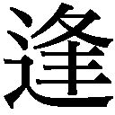

| 忘れかけていた大切なこと ほほえみひとつで人生は変わる PHP文庫 | |
| 渡辺 和子 | |
| PHP研究所 (2008) | |

忘れかけていた大切なこと
――ほほえみひとつで人生は変わる
渡辺和子
はじめに
自分では、まだそんな歳と思っていなかったのに、いつの間にか、電車の中で席を譲られるようになり、住んでいる市から、シルバーパスが送られてくるようになって、もう数年になります。
六十三歳で、大学での責任を次の人に渡して東京に戻った後も、ありがたいことに、いろいろのお仕事をさせていただいて、今日に到りました。
七十八年の生涯を振り返ってみますと、「こんなはずでなかった」ということの連続だったような気がいたします。九歳の時に遭遇した父の突然の死もそうでしたし、私がキリスト教に入信したことも、修道院に入ったことさえ、そうでした。
そして今日まで、数知れないことが、私の当初の計画とは違ったものとして与えられてまいりました。
そういうことの一つひとつを、真正面からしっかり受け止め、それから逃げることなく対処していかなければいけない、ということを習いました。さらに、自分の小さな計画が崩れてゆくのを静かに見詰め、「これで良かったのだ」と、自分に言いきかせ、ほほえんで対処してゆく術も、いつしか身につけたように思います。
幼い頃から、勝気でわがままだった私にとって、このように自分を〝変えてゆく〟ということは、決して易しくありませんでした。でも、自分との闘いの結果が、自分の心に平安をもたらすこと、そして、ほほえみが、物事を解決する糸口になるのだということに気づきました。
他人を癒し、励ます力をもつほほえみは、苦しみという土壌に咲く花です。そして、その同じほほえみが、自分の傷口をも癒してくれているのだということに気づかされました。
「こんなはずではなかった」ということは、歳を取ると、他人や物事に対してよりも、むしろ自分自身に対して言わないといけなくなるのです。いままでは出来ていたことが、出来なくなった――こんなはずでなかった。時間内に仕事が仕上がらなくなった――こんなはずでなかった。
このように腑甲斐なくなった自分を、腹を立てることなく受け入れ、許し、そして「これで良いのだ」とほほえみながら生き続けること。これが、これからの私の課題だと思っています。
この度、刊行していただくこの本も、私が生きてきた道すがら、折り折りに記したものばかりです。
刊行に当たって、ＰＨＰ研究所の阿達ヒトミさまに、一方ならないお力添えとアドバイスをいただきました。厚くお礼申しあげます。
二〇〇五年三月
渡辺和子
装丁――間村俊一
オブジェ――北見 隆
撮影――林 朋彦
もう一歩の優しさ
花粉症で多くの人が悩んでいた頃のことでした。一緒に住んでいる修道院のシスターの一人が私に、「昨夜は鼻が詰まって、夜中まで眠れなかった」と話し、私は、それに対して、「あら、シスター、お薬をちゃんとお服みになったの」と答えたことがありました。
答えて、別れた後で私は反省しました。なぜあの時、まず「辛かったでしょう」と言ってあげられなかったのだろうかと。
というのも、以前聞いた一人の方の話が心に残っていたからでした。その方が入院中、幾夜か眠れない日が続いたので、そのことを主治医に訴えたのだそうです。すると医師の答えは、次のようでした。
「では、お薬の量を増やすか、別の薬を出してみましょう」
同じことを、病室を訪れた看護師さんに話したところ、「そう、辛かったでしょう。夜が長く思われたでしょうね」という言葉が返ってきて、その人は、救われた思いがしたと話してくれたのでした。
主治医の応答は、妥当で非の打ちどころのないものだったに違いありません。でも、それは職業的な処置であって、必ずしも患者の心の痛みを癒すものではありませんでした。それに比べて、看護師さんの応答には、共感とぬくもりがあったのです。
花粉症に苦しむシスターへの私の応答も、不親切ではなかったけれど、親切なものでもありませんでした。私たちの日々の生活の中には、この「不親切ではないけれど、親切でない」ものが、結構多いのではないでしょうか。もう一歩踏み出す勇気と優しさに欠けていることが。
クリスマスは、神さまが、この一歩踏み出す「愛」を惜しみなくくださった祝日と言ってよいでしょう。
人間がおかした罪を赦すためには、それこそ一枚の「赦す」という〝処方箋〟でもよかったのに、神は、ことさらに一歩踏み出して、〝みことば〟である御独り子を、幼な子の姿で私たちにプレゼントしてくださいました。そこには、これ以上ない〝ぬくもり〟が感じられます。
東京のある大きな教会の主任司祭は、ふだんでも忙しいのに、クリスマスの前は大忙しで、やっとのことたくさんのクリスマスカードにサインだけをして送り出しました。同じくらいの多くのカードが司祭のもとに送られて来たのですが、その中の一通は、小学生の女の子からのものでした。
「神父さま、きれいなカードをありがとうございました。でも、お言葉がなくてつまらなかったです」
主任神父の忙しさがわからない子どもの言葉でしたが、司祭は、このコメントにハッと気付きました。神さまからのクリスマスカードは、「お言葉付き」だったということに。
私も学生たちに、よく言います。
「年賀状、結婚通知、転居通知には、印刷だけでなく、たった一言でいいから、自筆で、お世話になりましたとか、お元気ですかとか、書き添えなさいよ」
それが、ぬくもりというものなのです。
ワープロ、パソコン、携帯電話、メールが普及すればするほど、コミュニケーションは機械化されます。自動販売機で欲しいものが手に入り、コンビニ、スーパーのレジで、無言のうちに勘定が済ませられる世の中になればなるほど、人間から、言葉のぬくもりが失われてゆくのです。
人間の、夜眠れなかった辛さ、苦しさが、薬の処方だけで解決されようとする世の中は、味気ないだけでなく、恐ろしい世の中です。
マザー・テレサがシスターたちに、よく注意を与えていらっしゃいました。
「行列をしている人たちにスープボウルを渡す時、ほほえみかけること、ちょっと手に触れてぬくもりを伝えること、短い言葉がけをすることを、忘れてはいけませんよ」
自分たちがしていることは、「福祉事業ではない。一人ひとりの魂と関わることなのだ」と言って、政府からの援助を断り続けていたマザーは、やはり機械的な作業ではない人間のぬくもり、言葉、タッチを大切にした人でした。
「何をあげよう。何をもらおう」と、物質のやりとりに心を奪われがちなクリスマスです。この日、〝みことば〟が、人間の苦しみ、痛み、悲しみの〝処方箋〟としてでなく、その人と偕にいる神、インマヌエルとして来てくださったことを、何よりも貴いプレゼントとしていただきましょう。
そして、いただいたプレゼントを多くの人々と分かち合いましょう。不親切でないことに安心しないで、進んでちょっと親切になること、他人の心の痛み、苦しみに共感出来る「私」になりたいと思います。それが私のキリストへのプレゼントにもなるのです。
ほほえみの力
「初めて卒業生を送り出す立場になりました」
新卒で商業高校の教師となったＭさんが手紙をくれたのは、ある年の三月半ばのことでした。手紙には、その年の春に卒業していった一人の女子高校生のことが書かれていました。
家庭的にも学業的にも問題のあった生徒だそうですが、卒業式の当日、Ｍさんに向かって、
「先生だけは私を見捨てないでいてくれた」
と言い置いて、校門を出て行ったというのです。自分は一瞬、何のことかわからず戸惑ったけれども、考えてみたら、授業中にその生徒と目が合うたびにほほえみかけていたと思う。もしかしたら、そのことを言ったのかも知れない、と記した後に、Ｍさんはこうも書いていました。
「大学で学んだ四年間、シスターからいやというほど、ほほえみの大切さを聞かされましたが、〝きれいごと〟としか思っていなかった。でもほんとうに、ほほえみの力って、すごいのですね」
たぶん、くだんの女子高校生は、その学校の先生たちにとっては〝お荷物〟だったのでしょう。その存在は無視され、目と目が合ってもそらす教師の多い中で、新卒として赴任してきたＭさんだけは、しっかりと見つめたばかりか、ほほえんでくれた。「私はまだ見捨てられていない」と感じたうれしさを、卒業するに当たって、どうしても伝えたかったのでしょう。
ほほえみの中にはメッセージがあります。それは、「自分なんかいてもいなくても同じ。いないほうがいいのかもしれない」と思っている人への、「私はあなたを一人の人間、かけがえのない一人と見ていますよ」という好意なのです。それは、ほほえみを受けた人に、生きる自信を与えます。
このように、ほほえみには、私たちの心の中にある目には見えない愛を、目に見える形にして相手に伝えるコミュニケーションの役割があるといえます。
マザー・テレサは、共に働くシスターたちが町へ出て貧しい人たちに暖かいスープを配り終えて帰ってくると、まず「ご苦労さま」とねぎらってから、「ところで、その人びとにほほえみかけること、ちょっとしたやさしい言葉をかけることも忘れなかったでしょうね」と尋ねるのが常だったといいます。
この問いが示すように、マザー・テレサの仕事は単なる福祉事業ではなく、愛の行為でなければならないのでした。シスターたちの配るスープはお役所が福祉の一端として配るスープと、その中身は同じだったかもしれません。しかし、受けとった人は、そのスープによって体と同時に心も温められるのです。
ほほえみを添える時、受けとる人はもはや憐れみの対象ではなくなって、ほほえまれるに価する、尊厳を備えた一人の人間になるのです。
「ほほえみの力って、すごいのですね」とＭさんが言ったように、ほほえみは、みずからをモノ同然に考え、他人にもそのように扱われていた人の尊厳をとり戻す力をもっています。
いま、淋しい思いを抱いて生きている人がふえています。家庭にも学校にも居場所のない子どもたち、物には飽かされていても愛情に飢えている若者たち、相談する相手もなく悩みを抱えている母親たち、リストラされて「不要」というレッテルを貼られた大人たち、そして、機械の操作は出来ても人間同士の関係がうまく結べない働き盛りの人たち。
ほほえむことを忘れた人たちに、ほほえみを惜しまずに与えましょう。「あなたは一人ぼっちでない」というメッセージを発信し続けましょう。
ほほえみには、マジックのような力があります。与えられた人を豊かにしながら、与える人は何も失わない――それがほほえみなのです。
見えぬもの
青いお空のそこふかく、
海の小石のそのように、
夜がくるまでしずんでる、
昼のお星はめにみえぬ。
見えぬけれどもあるんだよ、
見えぬものでもあるんだよ。
これは、金子みすゞの「星とたんぽぽ」という童謡の一節です。この節に続けて、みすゞは、たんぽぽの莖はすがれていても、その見えない根は瓦のすき間に生きていて、春が来たら、たんぽぽの花を咲かせるのだ、と謳っています。
いまから七十年以上前に、二十六歳の若さで一人の娘を残して自死した童謡詩人、金子みすゞの存在は、死後五十年経って世に認められ、人の心を浄化する不思議な力をもった童謡詩の数々が、多くの人を魅了しています。
「見えぬけれどもあるんだよ、見えぬものでもあるんだよ」と、昼間の星について断言し、瓦のすき間のたんぽぽの根について語るこの童謡は、見えるものにばかり心を奪われている私たち一人ひとりに、〝忘れもの〟を思い出させてくれます。
私はかつて、附属幼稚園の園長を通算して十五年ほど兼任していたことがありました。幼い子どもたちに神さまのお話をすると、
「神さまがいるのなら、どうして見えないの。どうして一度もテレビに出ないの」
と尋ねられて、返事に窮したものでした。
そこである時、物理学者としても高名なカトリック神父に、
「神父さま、目に見えなくても存在するものがあるのでしょうか」
と尋ねました。すると、いとも簡単に、
「ありますよ。愛がそうでしょう」
との答えが返ってきたのです。
「神は愛なり」と聖書に書かれていますが、神も愛も、それなしには生きてゆくことが出来ないほど大切なものなのに、私たちの目には見えません。
『星の王子さま』という本の中で、王子と仲良しになったキツネが言っています。
「大切なものは目に見えない。かんじんなことは、心の目で見ないと見えないんだよ」
生前、日本を訪れたこともあるマザー・テレサは、その卓越した愛の生涯ゆえに、世界中の人々から尊敬されています。二〇〇三年の十月十九日にローマで、異例の早さで列福されたマザーを生かしていたものは、神への愛、人々、それも貧しい人、見捨てられた人々への愛でした。
一九九七年九月に帰天するに先立って、マザーは何回か手術を受けねばならなかったのですが、マザーを生かしていた愛は、外科医のメスに触れることはありませんでした。私たちが大恋愛をしている最中に、レントゲンにかかっても、愛は写りません。では無いのかといえば、あるのです。
レントゲンで見え、メスに触れたものは全部、焼場で焼けて灰になってしまいます。しかし、見えなくてもあったものは、焼けることなく、永遠に生き続けるのです。
「見えぬけれどもあるんだよ、見えぬものでもあるんだよ」
時たま口ずさみ、考えたい童謡詩です。
はきものを揃える自由
岡山での仕事を一九九〇年に退いて〝失業〟していた私に、声をかけてくださった学校の一つが東京の自由学園でした。そこの最高学部と呼ばれるところに、二〇〇四年三月まで勤め、四月に、ここも退かせていただきました。
ご承知のように、自由学園は羽仁もと子・吉一夫妻が一九二〇年代に創立した学園です。学園名を聖書の中の、「真理はあなたたちを自由にする」（ヨハネ８・32）から取っていることからもわかるように、キリスト教主義学校の一つです。
「思想しつつ、生活しつつ、祈りつつ」をモットーとし、自労自治を旨とするこの学園で、「キリスト教価値観」という講義をした十数年の間に、多くを学びました。その中で一つ、心に残る言葉があります。それは羽仁もと子が生徒たちに言ったという、「あなたたちには、はきものを揃える自由があります」という言葉でした。
「自由」と聞くと、「わがまま勝手」「何の拘束もない状態」を思い浮かべる人もいれば、難解な哲学的定義を考える人もいるでしょう。「はきものを揃える自由」は、少なくとも私の意表を突いた「自由」の表現でした。
揃える自由があるということは、揃えないで脱ぎっ放しにする自由もあるということなのです。使った椅子をそのままにしておく自由もあれば、元あったように戻してから席を立つ自由もあるということ、同じ仕事を喜んでする自由もあれば、不平不満の心でする自由もあるのです。
考えてみると、私たちの毎日の生活は、このような〝選択〟の連続といってもよいでしょう。一人格として人間らしく生きるということは、生活の中で遭遇するごく些細な一つひとつのことに対して、一瞬フッと立ちどまって考え、どうすることがより良い行為なのか、より人間らしい行為なのかを選ぶことにかかっているのです。そしてこのような「自由」の行使の結果が、「私」を作ってゆくのです。
大学四年生の「道徳教育の研究」のテスト監督を岡山でしていた時のことです。九十分テストでしたが、六十分以降は答案を置いて部屋を退出してもよいことになっていました。私の目に、一人の学生が立ち上がりかけて、また坐り、机の上の消しゴムのカスを手で集め、ティシュに納めてから再び立ち上がり、目礼して出てゆく姿が映ったのです。私は感心し、教壇を降りて、その学生の名前を確かめました。良い点数が、その人のテストについたことは言うまでもありません。
この人は、「消しゴムのカスを片付けてから立つ自由」を行使したのでした。それは面倒なことでした。でもこの人は、「面倒だから、しましょう」という私と学生たちとの間に交わしていた約束を実行してくれたのです。面倒くさいことを避けようとする自分の心と闘った末、勝って、自分の心の主人となったと同時に、次にその席に坐るだろう人への「思いやり」も果たしたのでした。それは本当に、人間らしい美しい行為だったのです。
便利になると、つい私たちは怠け者になりがちです。楽なほうを選びがちです。そんな世の中で輝くのは、案外、脱いだはきものを揃える人、椅子を元へ戻す人、暗い暗いと不平を言わずに、自分が立って灯りをつける面倒さを厭わない人なのではないでしょうか。
どうぞ、自由人としてお過ごしください。
恵みに気づく習慣
四十年も前のこと、私はアメリカのボストン郊外で、百数十名の修練女たちと一年間生活を共にしていた。それは、一人前の修道女になるために必要な修練の期間で、それまでもっていた世俗的価値観を叩き直される期間でもあった。
アメリカで迎えた初めての年の暮、修練長は私たちに、それぞれが過ごしてきた一年間を振り返ってみるようにとの訓辞をした。私のように一人だけ日本から来て、言葉にも習慣にも馴れないまま共同生活を送った者にとって、最初の一年間は戸惑うことも多く、失敗の連続で、叱られたり、文化の違いに淋しい思いを味わったりした一年間であった。それは程度の差こそあれ、他の修練女たちにも言えることだったろう。
だから、修練長が訓辞の最後に「Count your blessings」（頂いた恵みを数えるのです）と言われた時、ハッとしたものである。修練長が教えようとしたのは、一年間を振り返るのは、その間の辛さ、淋しさ、喜び、悲しみを思い返すためではなく、それらすべてを恵みとして数え感謝し、新しい年を迎える準備にしなさいということだった。
このような考え方を、私の日々の「小さな習慣」へと変えてくれたのは、一冊の本だった。それはイタリアで一生を終えた一人の修道僧の伝記であったが、彼は一日の終わりに床に就く前に、その日の出来事の中から、三つの「感謝すべきこと」を手帳に書き記す習慣を実行したということであった。かくて、その日以来、私もこの「小さな習慣」を実行する決心を立てたのだった。
大きなことでなくていいのだ。小さなこと、例えば、取り入れた洗濯物がパリッと乾いていたこと、混んだ電車の中で、運良く前の席が空いて坐れたこと、駅の階段で、転びそうになった時、見知らぬ人が支えてくれたこと、これら、ごく平凡なことでいいのだ。
しかしながら、この小さな習慣は、私を前よりも幸せにしてくれている。なぜなら、いままで〝当たり前〟と思っていたようなことが、当たり前ではなくて〝有り難い〟、つまり、有ることが難しい、したがって感謝すべきことだと思えるようになったからである。一方、私たちは、何と多くのことに、感謝しないままで生きているかということに、気づかされるようにもなった。
日に三つずつの感謝を記し続けてきた小さな手帳は、私の「魂の日記」でもある。その中には、感謝しがたいことに感謝している自分を見出すことが出来るからだ。例えば、病気をした日々に見出した恵み、他人から嫌なことを言われた日、心の重苦しい日に、何とかして、〝恵み〟をその中に見つけようとした心の闘いが、記録されている。
幸せを他人任せにしないために、どんな状況の中においても自分を幸せにするためには、工夫が要る。努力しないといけない。そしてそのために、「恵みを数える」小さな習慣は、立派に一役買うことが出来るのだ。
私たちの生活に、大きな幸せが訪れることもあるが、そんなケースはめったにあるものではない。それこそ、咽喉が渇いた時に飲んだコップ一杯の水への感謝と幸せの心、欲しかったものを百円ショップで見つけた時の嬉しさ、一見つまらないことと思われているものへの感動、感謝の心をもっていることこそが、自分をいまよりもう少し幸せにする秘訣だと、私は思っている。
「怒りを翌日までもち越すな」と教えられたことがある。夜、床に就いて翌朝目覚める保証は誰にもない。そうだとすれば、一日の終わりを感謝で締めくくることは、決して悪いことではないのだ。
「毎日三つも感謝することはない」と言う人もいるだろう。だから探すのだ。だから〝当たり前〟を見直してみないといけないのだ。一つひとつの事柄の奥深くに潜んでいる〝恵み〟に気づいて、それらを数えるために。
ほほえみが人を美しくする
あるところに、一人の顔の醜い女の子がいました。いつも薄汚れ、蕪のような形をした顔だったので、村の悪童たちから「泥かぶら」とはやし立てられ、いじめられていました。
「泥かぶら」も負けてはいませんでした。悪童たちを相手に石を投げ、竹の棒を振りまわすのです。
そんなある日のこと、一人の旅のおじいさんが通りかかり、その日も悪童相手に暴れている「泥かぶら」に申します。
「お前がそんなに口惜しいのなら、きれいになる秘訣を教えてあげよう。これから言う三つのことを、来る日も来る日も守ってごらん。お前はきっと、村一番の美人になる」
それは、
いつもにっこり笑うこと
ひとの身になって思うこと
自分の顔を恥じないこと
の三つでした。
半信半疑ながら、きれいになりたい一心で「泥かぶら」は実行します。この日から、彼女の相手は村の悪童たちではなくなり、自分自身になりました。何を言われても、されても笑顔で応える自分、かつて受けたいじわるを忘れて、困っている村人を手伝う自分、他の子どもと比較して卑下することのない自分になるための努力、闘いの日々が始まりました。
そして、その結果、「泥かぶら」は、「仏のように美しい子」と呼ばれるようになったというのが、真山美保作「泥かぶら」というお芝居のストーリーです。
「顔の造作は親の責任、顔の表情は本人の責任」という言葉があります。「泥かぶら」の場合も、顔の造作は変わりませんでしたが、表情の美しい子になったのです。彼女を美しくした〝化粧品〟の一つは、笑顔でした。
美しい表情をもっていた人の一人に、マザー・テレサがいます。初めてマザーにお会いした時の第一印象は、思っていたよりも厳しい表情の方だというものでした。それはたぶん、私たちには計り知れないくらい数多くの悲惨な人びとの姿を見つめ続けてきたがゆえの、厳しい表情だったのだと思います。
ところが、お笑いになると、その厳しい顔がなんともいえない良い笑顔に変わるのです。マザーは〝きれいな人〟ではありませんでしたが、美しい笑顔のもち主でした。
たくさんの子どもたちが、生まれては次々と死んでいったり、産み捨てられるインドにおいて、マザーの仕事の一つは、産めない子、育てられない子を宿さないようにという「家族計画」の呼びかけでした。マザーは、その「計画」について説明をしたあとでこうつけ加えました。
「ところが、当のマザーのところでは、子どもが毎日ふえているじゃないかとよく笑われるのですよ」
それはもちろん、捨てられた子どもたちがマザーのところに連れてこられるうちに、その数がふえたということなのですが、そんなユーモアも見せるマザーのいたずらっ子のような笑顔には、なんともいえないさわやかさと魅力がありました。
マザーの笑顔には、悲惨さの中に見出す喜びがあふれ、子どもたち一人ひとりをいとおしむ愛がにじみ出ていました。それが、しわいっぱいの、年齢よりもふけて見えるマザーを、美しい人、魅力的な人にしていたのでした。
ほほえみは まばたきといっしょ
むりにではなく しかたなしにでなく
気づかずに 自然に
花の香りのように
（河野 進）
自然なほほえみは、実は〝自然〟に身につくものではなく、「泥かぶら」のような自分との闘いと、マザー・テレサのような苦しみの中に希望をもつ勇気から生まれます。このようにして生まれ育ったほほえみのみが、花の香りのように漂い、人を美しくし、他人の心を癒す力をもっているのです。
恩 人
英語には、日本語の「恩」に相当する言葉はなくて、強いてこれを訳せば「返しても返しても返し切れない負債」ということになるようです。「義理」も同様に、日本独特の感覚ですが、これは「返済可能な負債」です。したがって、義理は〝果たす〟ことが出来るのですが、恩は果たすことが出来ません。
私はたくさんの恩人をもっています。終戦後、経済的に困っていた時に助けてくださった方、修道生活への道筋をつけてくださった方、管理職に不向きな私をいつも輔佐してくださった方、このように多くの恩人に恵まれた私は、幸せ者だと思っています。
私の母は義理堅い人で、何かを頂戴した時には、すぐに礼状を書き、それ相応のお返しをして義理を果たしていました。その同じ母が、恩返しの行為をすることの大切さとともに教えたのは、今日の自分があるのは、「恩人たちのおかげ」ということだったのです。このことを忘れずに生きていれば、いつも心に感謝の念があるわけだし、人は、そうやって幸せになるのだということでした。
母はまた、何かを恵んでくださった人、助けてくださった人だけが恩人なのではなくて、私たちを苦しめた人、私たちに嫌な思いをさせた人々もまた、長い目で見れば恩人なのだということを教えてくれました。
「そういう人がいるおかげで、私たちは成長出来るのだからね」
そういう母の言葉には、経験した人のみがもつ重みがありました。
「我以外、皆師なり」という言葉があります。これは、自分以外のものすべてから、私たちは何かを習うことが出来るということ、したがって、いつも謙虚に「恩を受けている」という思いを抱いて生きるということです。
随所に恩人を見出すことを教えてくれた母こそは、私にとって、神さまを別にして、第一の恩人なのです。
小学生の道徳
親の反対を押し切ってキリスト教の洗礼を受けた一人の学生が、こんな手紙を書いてよこしました。
「いくら『神だ、愛だ』と言っても、自分自身の生活がコントロール出来ていなくては、何にもならないのですね。常日頃、親から言われている小さなことへの努力を、大学生になってから、いい加減にしてきたように思います」
そして、〝小学生の道徳のようですが〟と前置きして、「これからは、朝きちんと起きること、一つひとつの授業をまじめに受けること、何ごとも後まわしにしないこと、気分に左右されず行動すること、夜ふかしをしないことなどを、自分に課してゆこうと思います」と書いていました。
私も、親の反対を押し切って洗礼を受けた一人なのですが、その頃、「それでもあなたはクリスチャンなの」と、よく母からなじられたものでした。この学生と同じく、日常生活の中で、するべきことを怠けていたり、我慢したらよいことを我慢していなかった私に、自分自身との闘いもしないで、「信者です」と言っても、それは偽善でしかないという母のいましめだったように思います。
〝小学生の道徳〟が、実は大切なので、それを軽蔑するどころか、それさえ出来ていない〝自分〟をこそ恥じないといけないのです。
二十一世紀に入っても、あい変わらず「愛」という言葉が気軽に囁き交わされ、歌われ、書かれたりしています。その割りには、愛の反対である憎しみ、いじめ、無関心が減ることなく、むしろ、ますますエスカレートして、悲しくも恐ろしい事件がふえているのです。人間性の「劣化」という言葉が脳裏をかすめるような出来事も枚挙にいとまがありません。
一方、科学技術文明は日進月歩の発達を遂げ、かつては神の領域とされていた生と死の分野も、人間操作の対象となっています。能力的には人間よりも勝れたコンピューターやロボットが次々と出現し、人間に取って代わって重宝がられている世の中になりました。
ところが、これらのモノは、古くなった、役に立たなくなったといって、廃棄処分にしても構わないのですが、人間だけは、たとえ重度の障害者であっても、認知症になってしまったとしても、決して、そのように扱われてはならないのです。なぜでしょう。
「人間の尊厳」という言葉が心に浮かびます。
冒頭の学生の言葉に戻って考えると、「人間の尊厳」を主張するからには、それにふさわしい日常生活が伴っていなければならない、ということでしょう。大学生ともなると、とかく〝小学生の道徳〟を忘れがちなのです。
クリスマスは、神が幼な子の姿でこの世に来給うたことを祝う日です。この、神の〝小ささ〟の中に私たちも、日頃の忘れものを見つけないといけないのではないでしょうか。
旅人である私たち
「人生という旅路において、一つの到達点は、すぐ次の出発点となる」という言葉に出会ったことがあります。
三月は卒業の月と言われています。日本語では、業を卒えると書きますが、英語では、これをCommencementと呼んで、〈始まり〉という意味をもたせています。実に一つのことの終わりは、同時に、次のことの始まりでもあるからなのです。
ホモ・サピエンス〈知恵ある人〉と呼ばれる現代人は、他にもいろいろ、人間を特徴づける名で呼ばれていますが、その一つに、ホモ・ヴィアトール〈旅する人〉があります。それは、私たちの人生は一つの旅であることを示し、さらに、最後の目的地に到達するまでは、一つの到達点は、すぐに、次の出発点になることを教えてくれる呼び名でもあります。
旅人として、この世を渡っている私たちは、では、どんな気持ちで旅をしたらよいのでしょう。ある時、私は一人の方から、こんな言葉をいただきました。
「どの道にも、それぞれの苦労がある。どれだけ歩いたか気にせず、愛をこめて歩け」
これは、他人と比べて、自分の歩みが速いか遅いかを気にしたり、自分の道が他人のそれより平坦かデコボコかを気にしたりせずに、自分らしく、自分しかつけられない足跡をつけながら、ただひたすらに愛をこめて歩きなさい、ということだと、私は受け止めました。
年度末、または卒業という一つの区切りに当たって、私たち一人ひとりは、自分がいままでどんな歩き方をしてきたかを振り返り、次の道程を、どのように日々歩いたら良いかを考えたら良いのだと思います。
文明の発達は、人が一人で生活することを可能にしています。かつては他人の世話にならなければ出来なかったことが、一人で出来る便利な世の中になりました。その一つの例に自動ドアがあります。車椅子の人も、杖をつく人も、両手に荷物をいっぱい下げた人も、誰のお世話にもならないで、スイスイ通ってゆけるのです。ありがたいことです。
ありとあらゆるお惣菜や冷凍食品等が、デパートの地下やコンビニに備えられていて、これまた、一人暮らしの不便さを解消してくれます。ありがたいことです。
でも、私たちは、この便利さの蔭で何かを失っていないでしょうか。文明は、手助けを不要にした代わりに、他人を思いやる心を徐々に、私たちから奪っているみたいです。文明というよく効くお薬の〈副作用〉の一つが、無関心なのです。その結果、私たちの周囲には、淋しい人、生きる自信と勇気を失っている人が、以前より多くなっています。
マザー・テレサがお創りになった「神の愛の宣教者」という修道会では、シスターたちが、お腹を空かせた人たちに、暖かいスープやご飯を食べさせています。シスターたちが一日の仕事を終えて戻ってくると、マザーはその労をねぎらいながら、次のようなことをお尋ねになったものでした。「今日、スープボウルを渡しながら、何人にほほえみかけましたか、手に触れてやりましたか、短い言葉をかけてやりましたか」
つまり、飢えている人が求めているのは、単なるスープやご飯だけではなくて、他人からの優しさ、愛であり、その表われとしてのほほえみ、手のぬくもり、言葉がけなのです。人は「パンだけで生きていない」のです。
「あなたは生きていていいのですよ。生きていてくださいね」という心から心へのメッセージが届く時、スープボウルを渡すことは、単なる〈仕事〉ではなくなり、「共に生きよう」とする人の〈愛の表われ〉となるのです。〈憐れみ〉ではなく、相手を一人の人間と見る〈尊敬〉のまなざしがそこにあります。
〈優しい〉という字は、人偏に憂いと書きます。憂いから逃げないで、そのかたわらに人がたたずんでいる時、それが自分の悲しみであろうと、他人の苦しみであろうと、そこに〈優しい人〉の姿が生まれるのです。
「どの道にも、それぞれの苦労がある」というのは本当です。苦労なんかなさそうな人、見るからに幸せいっぱいのような人にも、人知れない苦しみ、悲しみがあると、相田みつをさんが詠んでいます。
だれにだって
あるんだよ
ひとにはいえない
くるしみが
だれにだってあるんだよ
ひとにはいえない
かなしみが
ただ だまっている
だけなんだよ
いえば ぐちになるから
旅人である私たちは、時に自分が歩いてきた道を振り返り、いままでより、もう少し優しく、相手を思いやり、相手が求めている笑顔とぬくもりを与えながら、この旅を続けてゆきましょう。この道は一度しか通らない道です。ていねいに、愛をこめて歩いてゆきましょう。
人生は旅で、辛い日も苦しい日もあります。でも、いくつかの到達点と出発点を繰り返した後に、私たちは旅の目的であり、終着点である「死」に到達し、そこで、終わることのない永遠の生命へと入るのです。
苦しみでなくなるように
「苦しみ『が』なくなるようにと願うのではなく、苦しみ『で』なくなるようにと心掛けてごらん」と言われたことがある。
苦しみ自体をなくすことは出来ない。苦しみは、どこにいても、何をしていても私についてまわる。だからこそ、この生きにくい世を、少しでも生きやすく自分で工夫するのだ。他人に楽にしてもらおうなどと考えるのは、甘えでしかない。
では、どうしたら苦しみを苦しみ「で」なくすることが出来るか。一つには同じ問題を、違った観点から見ると、新しい発見をすることがあるものだ。
例えば、自分にとって邪魔な人がいるとする。「神さま、どうぞこの人を私の前から消してください」と祈ったとする。しかし、その祈りは叶えられない。その時に、発想を転換してみる。自分の思うままになる世の中があるとしたら、それは相手の思うままにもなる世の中ではないか。相手が私のことを「死なせてください」と祈ったとしたら、私は死なないといけなくなるではないか。
ここに至って気づくのである。「世の中は、人の思うままにならないからこそ、お互いに安心して暮らせるのだ」。こう気がつくと、何となく現実が受け入れやすくなり、自分中心主義から抜け出して、「お互い同士、迷惑をかけ合って生きている」という事実に気づいて、許すことが出来るようにもなる。心の疲れも、いくぶん癒されるだろう。
自分の心のもち方を変えることも大切だ。障害児を産んだ一人の卒業生の言葉。
「子どもの障害を知らされた時は、目の前が真っ暗になり、一緒に死のうとさえ思いました。でも思い直して、神は私の力に余る試練を決してお与えにならない、という言葉を思い出し、私なら育てられる、と信頼してこの子を預けてくださったのだと考えることにしました」
このように考えたからといって、重度の障害児を育ててゆく苦しみがなくなったわけではないだろう。ただ、子どもを、自分の苦しみの対象「で」なくする一つの心の転換が出来たので、それは救いである。苦しみに、意味が見出せた時、苦しみ「は」、苦しみ「で」なくなることがあるからだ。
一人の中年の男が、最愛の妻に先立たれた。その苦しみは尋常でなく、いかなる慰めの言葉も、その人の悲しみを癒すことは出来なかった。オーストリアの精神科医、ヴィクター・フランクルのところに連れてこられた時、フランクルは男に語りかけた。
「そこまで奥さんの死を悲しむあなたの姿を見ていると、実に痛ましい。いっそのこと、あなたのほうが、奥さんより先に死んでいたら良かったですね」
この言葉に、男はキッとなって言い返した。
「とんでもない。愛する妻に、いま私が味わっているような苦しみを味わわせることなど、出来ません」
そこでフランクルが言った。
「では、いまのあなたの苦しみは、奥さんがそれを味わわないためのものではありませんか」
それを聞いた時、男の態度は一変した。
「そうでした。私は妻の代わりに、いま苦しんでいるのですね」
晴々として去ってゆく男の苦しみは、もはや苦しみ「で」なくなっていた。同じ事実を、新しく見直すことによって、彼は救われたのだった。
心の疲れもストレスも、それが不毛に思われ、また、いつ終わるかもわからないような状況のもとでは、本当に辛いものだ。そんな時には、自分が積極的に「変わる」ことが必要である。自分で自分を癒すのだ。
私が修道院に入ったのは三十歳を目前にした時であった。それまでも決して苦しみと無縁の生活をしていたわけではなかったが、仕事をしていたこともあって、ストレスを発散する場もあった。そんな私が、一時、修道院という狭い囲いの中での共同生活、人間関係に、〝出口なし〟の窒息感と、他人への不満を抱いたことがあった。
そんな時に出会った一つの詩。
人と人とのあいだを
美しくみよう
わたしと人とのあいだをうつくしくみよう
疲れてはならない
（八木重吉）
私は「疲れていた」。でも、その疲れは、努力した結果の疲れでなく、他人が自分の思うようになってくれないことへの、焦りの疲れであり、不平不満からの疲れであったことに気づかされたのだ。
私は、人と人との間、自分と人との間を「美しく見る」努力をしていなかった。変わるのは他人でなく、他ならぬ「自分」だったのだ。アッシジのフランシスコの「平和の祈り」にあるように、
慰められるより 慰めることを
理解されるより 理解することを
愛されるより 愛することを
私が祈り求め、実行する努力を怠っていたことに気づいたのだった。
心の疲れは、このように自分の心の向きを自分中心から、他人への思いやりに百八十度転換させることで、癒される時がある。
でも疲れ切って、転換するエネルギーもない時があるものだ。そのような時は、そんなに弱い自分を優しくいたわって、休めてやろう。私たちは時に、自分に厳しすぎることがあるようだ。
人生に無駄なことは一つもない。苦しみさえも、それを乗りこえた時、それは一つの業績となって、私たち一人ひとりの「人生の履歴書」の中の「苦歴」の欄を豊かにする。
一生の終わりに、私たちの「履歴書」を受け取ってくださる方は、学歴にも職歴にも目をくれず、「苦歴」に目を通して、「辛い人生をよくがんばったね」と、ねぎらってくださるお優しい方なのだ。
それを信じて、今日の私の苦しみ「を」、苦しみ「で」なく受け止め、自分にしか書けない人生の履歴書を書き続けてゆきたい。
人間関係の中で
人間が二人以上いるところ、そこには慰め合い、励まし合い、いたわり合う美しいかかわりも生まれるが、反面、誤解、中傷、心のぶつかり合いといった煩わしい関係も生じる。それまでのつき合いが深ければ深いほど、一旦生じた亀裂は修復しがたく、そのことで、心の平安が乱されることも多い。
私もある時、仲良しと思っていた人から、身に覚えのないひどい言葉を聞かされて、とても悲しかったことがある。電話口で、よほど言い返そうかとも思ったが、その時私の口から出たのは、「ごめんなさい」という謝罪の言葉だった。
しかし、その言葉も相手との関係を修復出来ず、今日に到るまでこじれたままである。では、謝り損だったかというと、必ずしもそうは思っていない。相手の感情に巻き込まれず、先方の気持ちを受け止めることが出来たこと、一歩譲って謝ることが出来たことを、私は嬉しく思っている。
「私が私でいられた」ことへの満足感が、悲しく辛い人間関係のこじれを補ったといっても良いのかも知れない。自分が何気なく取った行動が、気心を知っていたつもりの相手の心を傷つけていたということは、私にとって良い勉強になった。
人間関係というものは、所詮、生身の人間同士のかかわり合いであり、理屈が通用しない感情の部分が多分にあるものだ。そうだとしたら、理屈の上で「先方が悪い。相手が先に謝るべきだ」と主張していても始まらない。人間関係のこじれを直すのに、理屈は役に立たないと知るべきであろう。
相手に合わせることも大切だけれども、そんなことばかりしていると、「自分」がなくなってしまうような気がする。人間関係というのは、一人格と一人格の間の関係なのだから、「自分」がないところには成立しない。
こんな和歌を、『折々のうた』（岩波書店）で見つけた。
今日しみじみと語りて妻と一致する
夫婦はついに他人といふこと
（柴生田 稔）
「ついに他人といふこと」
これは淋しい結論であるが、厳しい現実でもある。一人で生まれ一人で死ぬ、この人間の孤独という条件をしっかりと受け入れる時にのみ、他人に過度の期待をすることもなくなり、自分もまた他人を理解し尽くすことは出来ないと知って、良好な人間関係が築けるのであろう。
どれほど親しい間柄でも、相手と自分は同一人物でないという自覚を保ち続けることは大切である。そうすれば、期待外れの反応に対しても、理解のズレがあっても、それが当たり前と受け止められる。それは、淋しいことであるが、この淋しさに耐えてのみ、「自分」を護り抜くことが出来るのだ。
淋しいだけでは、人間、生きてゆけない。だから仲良しを作るのだ。ところでまず仲良くならないといけない相手は、「他人」でなく、「自分」である。誰しも好きな人といっしょにいる時は楽しいものだ。だから、好きな自分と四六時中いっしょにいる人は、自然と笑顔も多くなる。不思議なことに言葉から棘がなくなり、相手の言葉をふんわりと受け止めることが出来るようになるものだ。自分には〝帰るところがある〟という安心感が、そうさせるのだろう。
この〝安住の地〟があると、他人に対して卑屈になることなく、一歩譲ることが出来、争いにまで発展させることなく、自己を主張することも出来るようになる。このようにして、人間関係の中にいつしか〝自分らしさ〟が育ってゆくのだ。
負けて勝つ
幼い時から母に、「負けるが勝ち」という諺を聞かされて育ちました。それは私が運動会とか、学校の成績などで誰かに負けた時、私を慰める時に使われた言葉ではなく、むしろ、腹を立てたり、口惜しがって、相手に仕返しをしようとする私に対して、それを思いとどまらせるために言われたことでした。
「ここは我慢して相手に勝ちを譲りなさい。それがのちのち、良い結果になることもあるのだから」
自分の長い人生経験に裏付けされたものだっただけに、母の言葉が、この短い諺を、説得力のあるものにしていました。
でも、負けるには勇気が要ることがあります。それは自分との闘いであり、負ける時点では、本当に勝ちに転ずるかどうかがわからないだけに、信仰も要るのです。母には、「お天道さまが見ていらっしゃる」という信仰がありました。だから、確信をもって、子どもたちにも教えることが出来たのでしょう。
十八歳で洗礼を受け、キリストを知るようになって、私はキリストの中に、人の目には惨めな敗北としか映らなかった十字架上の死を通して、復活の栄光、勝利に輝いた人の姿を見ることが出来るようになりました。キリストほど、華々しく負けて、しかるのち勝った人はいないのではないでしょうか。
日本語でいう〝出来る人〟と、〝出来た人〟とでは、たった一字の違いですが、内容はかなり異なります。いつもいつも勝っていて負けを知らない人を、私たちは〝出来る人だ〟と評価します。それに対して私たちが、〝あの人は出来た人だ〟と言う時、それは、人間的に円熟した人、包容力のある人、負けることの大切さを知り、時に応じて、進んで相手に勝ちを譲ることの出来る人をいうのです。
キリストこそは、負けて勝つことを知り、私たちへのお手本となった、真の〝出来た人〟だったのです。
領収書の信仰
神様 あなたにあいたくなった
（八木重吉）
もしかすると、こんな気持ちが、祈る時には大切なのではないか、と思うことがあります。決められた祈りを、半ば機械的に唱えるのでもなければ、願いごとの祈りでもなく、ただひたすら、「お会いしたい」と思うのです。
いろいろのことがあった一日の終わりに、「ああ、そうだ。今日は神さまのことをすっかり忘れていた」と、無性にお会いしたくなる。その気持ちが、そのまま祈りなのではないでしょうか。
または、人から冷たくされたり、誤解されたりした時も、「ああ、私にはまだ神さまがいらっしゃる」と、心に勇気をいただくことがあります。こんな思いも、そのまま、祈りになります。そして、それまで忘れていた神の存在が、こうして思い出されるのだとしたら、苦しみもまた、恵みに変わることになります。
昔、教えていただいた一つのこと。「請求書の祈りばかりしないで、領収書の祈りも忘れずにしなさいよ」。その時の私にぴったりの忠告でした。そしていまも、そうなのです。「お願いしておいたことは、どうなっていますか。早くください」といった請求書の祈りが、何と多いことでしょう。
請求した通りのものをいただいた時はもちろんのこと、お願いしたのと違ったものが与えられた時にも、私たちはキチンと「領収書」をお渡ししないといけないのです。
「私がお願いしたのは、欲しいものでした。でも神さま、あなたは私が必要としているものをくださったのですね。ありがとうございました」と言いながら、ハート印の領収印をポンと押して、お渡し出来る自分になれたらいいなと思っています。
運命は冷たいけれど摂理はあたたかい――講話より
曹洞宗の尼僧、青山俊董が書いた『禅のまなざし』（鈴木出版）という本の中に、「だいじょうぶの小石」というお話があります。仕事がら病院に出入りを許されている一人の方が、掌に入るくらいの小さな小石をもっていて、これから手術を受けようとしている人に、その小石を握らせてあげるのだそうです。その小石には、平仮名で「だいじょうぶ」と書いてあるので、それを握らせてもらった人は、
「大丈夫なんですね。手術はうまくいくのですね。ありがとう」
と喜びます。すると、その方は、
「あなたが思っている通りになる大丈夫ではなくて、どちらに転んでも大丈夫、そういう大丈夫の小石なんですよ」
とおっしゃるのだ、というお話なのです。
この話を読んで、私のこれまでの考えは足りなかったと思いました。これまでは、「手術のためにお祈りしてください」と頼まれると「はい、わかりました。きっとお治りになりますよ。大丈夫ですよ」、そういう気持ちで「大丈夫」を使っていたことが多かったと思うのです。
祈れば神が私の願い通りにしてくださる、病気を治してくださる、夫の怪我を治してくださる、子供の暴力を止めてくださる、というのではなく、どっちに転んでも大丈夫、神は悪いようにはなさらないという信頼、腹のすわった心がまえ、そういうものをもって祈ることが大切なのだと気づいたのです。
祈りは神を変えません。私を変えるのです。私たちが祈りさえすれば神はきいてくださると思うのは、必ずしも正しくありません。私たちの意のままになる神は、「神」ではなくなります。私がどう願おうと、神は、ご自分の御心をお行いになるのです。私は「欲しいもの」を願うけれど神は「要るもの」をくださるのです。
私は二十六年前、うつ病になりました。五十歳で脂が乗っている時、仕事が面白くて仕方がない、その時に欲しくもない病気をいただきました。その時、一人のカトリックのお医者さまが、
「シスター、運命は冷たいけれど、摂理はあたたかいですよ」
と慰めてくださったのです。
その当時は、その言葉の意味がわかりませんでした。治りたい！治りたい！とだけ思い、神を恨み、愚痴を並べ、そして暗い顔をしておりました。私が唯一ほほえむことの出来なかった時期です。
その後、運命と摂理の違い、それがようやく少しずつわかってきました。この世の中に起こることをしようがないこと、降って湧いたような天災、人災つまり、運命として受け取るのではなく、同じ受け取るのなら、摂理としてprovidence、神のはからいとして受け取る。だから「大丈夫だ」ということなのです。
私の欲しかったことはその時には実現しないかもしれない。でもいつか神の時間に、実現されるのだということ、そう信じて生きることが、すべてを摂理として受け止めるということなのです。旧約聖書のコヘレトの言葉という章に「何ごとにも時があり、天の下の出来事にはすべて定められた時がある。......神はすべてを時宜にかなうように造り、また、永遠を思う心を人に与えられる。それでもなお、神のなさる業を始めから終わりまで見極めることは、許されていない」と書かれています。
本当にそうだと思います。神の摂理として病気をいただいたということ、その時はとても辛かったけれども、いまとなっては、あの時あの病気をしてよかったと思います。病気をしたおかげで人に対して優しくなりました。それまで人に対してきびしくて、あの人はだらしがない、なぜもうちょっと頑張らないんだ、などと思っていたのが、それを思わないで済むようになりました。自分の弱さを知ったからです。
私が変わるために、神が摂理として病気をくださったのだと思います。そして、そう思うことが出来るようになったことをありがたいと思います。
皆さん方がご卒業になる時「大学を卒業するのはやさしいけれど、この大学の卒業生らしくあり続けること、それは必ずしもやさしいことではない。覚悟して社会にお出なさい」と申し上げたと思います。このノートルダム清心女子大学を卒業なさった皆さん方は、「だいじょうぶの小石」をしっかり握りしめて生きることが出来る方たちであって欲しいと思います。
時たまポロッと落としてしまってもかまいません。どこに置いたかわからなくなって探し回ってもかまいません。でもいつかその「だいじょうぶの小石」をもう一度見つけてください。時には、しっかり握りしめていないと、生きていけない辛い日々もあるかも知れません。それでいいのです。
私たちの大学の創立者、マザー・ジュリーが、苦しみの多い生活の中でいつも「だいじょうぶ、神さまのなさることはどっちへ転んでもだいじょうぶ」の信頼に支えられ、笑顔を忘れないで明るくしていらしたように、「よき神のいかによきことよ」というお言葉をお忘れにならなかったように、私たちも神さまを変えるのではなく、私たちの心の向きを変えることによって、私たちの生活をポジティブなプラス思考に、笑顔の多い明るいものにしていくことが出来るのではないかと思います。
愛はすべてを望み、すべてを耐え忍ぶ
第二次世界大戦中、ユダヤ系であったがゆえに捕らえられ、アウシュビッツやダハウの収容所で生活したオーストリアの精神科医に、ヴィクター・フランクルという人がいました。戦争が終わってから自らの収容所体験を、『夜と霧』『死と愛』（以上、みすず書房）といった著書の中に書き記していますが、その中に、次のような言葉があります。
「人間の極限状況ともいうべき収容所内で、同じ苛酷な労働を課せられ、僅かの食糧と、人間以下の生活を送らされながら、ある人々は生きのび、他の人々はガス部屋に送られるまでもなく死んでいった。この両者の生死を分けたのは、彼らの体の頑健さではなくて、希望の有無であった」
いつかこの戦争は自分たちの勝利に終わる。その時は自由の身となって、妻子と再会し、以前の生活に復帰し、やりかけていた仕事を継続するのだという、それこそ夢にも似た希望を、収容所の日々の中で抱き続けた人たちだけが、その苛酷な生活に耐え抜いて、終戦を迎えることが出来たというのです。
囚人の中には、絶望のあまり、高圧電流が流れている〝鉄条網に向かって走る〟、つまり自殺を図った人たちもいました。ところが、生死さえ定かでない妻子と再会する希望、やりかけていた仕事をいつか完成させたいという情熱、そして自分のいのちに対しての愛が〝希望〟となって、明日もわからない囚人の〝今日〟を支え、彼らが、その置かれた状況に耐えて生きる原動力となったのでした。
「苦難は忍耐を、忍耐は練達を、練達は希望を生むとわたしたちは知っている」と、パウロは、ローマの信徒への手紙に書いています。愛があれば苦労がないのです。愛こそは人の心に希望を与え、この希望に支えられて、私たちは、すべてを耐え忍ぶことが出来るのです。
人生のレポート――同窓会に寄せて
数日前、一人の卒業生から手紙をもらいました。初めてのお子さんが障害児だったのです。クリスチャンではない方ですが「神さまが私なら育てられると思って、お預けになったと思うことにしました」と、その節、健気に書いてくれた人でした。
でも、よそのお子さまの発育ぶりを見ると悲しくなる。「シスター、強くなるってどういうことなのでしょう。難しいです」とこの度の手紙には書かれていました。
ある本を読んだ時に、Life is difficult.（人生って難しい）と冒頭に書いてあったことがあります。本当にそうです。この卒業生の問いはそのまま私自身の質問でもあります。強く生きたいと思うのだけれども、物事がうまくいかなくて落ち込んでしまうような時、どうしたら強くなれるのでしょう。
私は、その人に「強くならなくてもいいのよ。泣きたい時には、お泣きなさい」と書いたと思います。「一字の違いを大切にしてくださいね」とも。
一字の違いというのは、苦しみ「を」なくすることでなくて、苦しみ「で」なくするということなのです。
苦しみがない人生を誰しも送りたいと願います。でも不完全な人間の世の中、それは不可能です。多かれ少なかれ、私たちは皆、何らかの辛いこと、思うままにならないことをもって生きています。その苦しみを意味のあるものとして、苦しみでなくすこと。これが、もしかすると強く生きていくために助けとなってくれるのだと思います。
人格論の授業の中で、ヴィクター・フランクルが言った人間の自由についてお話をしました。
「人間の自由とは、諸条件からの自由ではなくて、それら諸条件に対して自分のあり方を決める自由である」
障害をもった子供を産んだという条件は変えることが出来ない、それから自由になることは出来ないけれども、その事実をどう受け止めるかの自由があるということなのです。
いまここに集まっていらっしゃる皆さまは、清心スピリットに結ばれている方たちです。それは、創立者マザー・ジュリーのスピリットと言ってもいいかと思います。苦しみの生涯であったにもかかわらず、神を恨むことなく、いつも笑顔を忘れず、この世の中に無駄は一つもないと信じてマザーは強くお生きになりました。私たちも、このマザーの娘たちとして強く生きてまいりましょう。
皆さまに人生のレポートを引き続き書いていただきたいと思います。Life is difficult.その難しい人生を、ご自分らしく生きていらしてください。良い人生とは、決して苦しみや十字架のない、または、少ない人生ではなくて、苦しみを苦しみでないものとする自由を行使した人生だと、私は思っています。
二年に一度開かれるこの同窓会から私たち一人ひとりが、いま必要としている力と慰めをいただいて家路につくことが出来ますように、私も皆さまからたくさんの愛とエネルギーをいただいて、自分のレポートを書き続けていきたいと思います。
簡 素
修道院に入った時、目上から修道会の精神の一つはシンプリシィティ、単純さであると教えられました。そしてそれは、ひまわりの花のように、いつも太陽である神をみつめて生きる生き方であり、「一対一」、神と私との生活だということを習いました。その時以来、この「一対一」という言葉が深く心に残っています。
近頃、シンプルライフということが叫ばれ、物をあまり多くもたない、ぜいたくや無駄をしない、ゴミを少なくするというように、生活上での簡素化が求められています。これは大そう良いことで、私たちが生活を簡素にすることは、自然環境の保護にも役立っているのです。
ところでシンプルライフは、私たちの精神生活の上でも精神環境の保護と美化に役立ちます。
「一対一」の心、神をみつめて生きる心を忘れる時、私たちは、人と人との間に、何かあるのではないかと気をまわし、自分と他人との間も、素直に見ることが出来なくなってしまいがちになります。素直に見るということは、必ずしも、他人から馬鹿にされるような単純人間になることではなくて、物事にしても、人にしても、あるがままに受け止めるということなのです。
世の中には、言葉と心の不一致、行動と言葉の不一致も多く、互いの腹の探り合いをしたり、思惑をめぐらさざるを得ないことが多くあります。そのように複雑な世間の真っ只中にいて、しかもなおシンプルな心を保つ秘訣、それはやはり、「一対一」という言葉に表わされる簡素な生き方ではないでしょうか。神――人間よりも大いなる存在のまなざしの前で生きるということにあります。
天 使
天使と聞いて、すぐ心に浮かぶのは、クリスマスの聖劇の中で、キリストの生誕を祝う幼稚園の子どもたちの何人かが、白い服に翼をつけている姿かも知れません。守護の天使として、幼い子どものかたわらに寄り添っている姿が描かれていることもあります。
アメリカの日曜学校で教えていた時のこと、何人かの子どもたちが、椅子の端っこを少しあけて坐っているのに気づきました。「どうして真ん中に坐らないの」と尋ねると、「だってママが、守護の天使がいつも一緒だって言っていたもの」という答えが返ってきたことがあって、生活の中の天使の存在に気づかされたことがあります。
天使は、常に私たちを守り、導いてくれる神のみ使いとして聖書にも記されています。イエス、マリア、ヨセフの聖家族と、その生涯には、いつも深く関わっていたようです。
もう二十年も前のことです。私が会議の途中ドイツの空港に降りた時、何かの手違いでドイツを一両日案内してくれるはずの人が来ていませんでした。言葉もわからず、知り人もない土地で途方にくれた私には、手帳にあった一つの電話番号が唯一のたよりでした。それは日本で働いていた宣教師が、故国ベルギーに休暇で帰るに当たって教えておいてくれたものでした。
電話がつながった時の嬉しさ、日本語で、空港から駅までバスに乗り、そこから列車に乗るよう指示を受け、ようやくブリュッセルの駅に辿りついた時、そこには、その神父とお兄さまがニコニコして待っていてくださいました。その時のお二人は、私にとって、まさに「天使」そのものでした。
肉体をもつ私たちは、霊である天使のような生活は出来ません。でもせめて、困っている人に手を差しのべる〝巷の天使〟、子どもたちの〝守護の天使〟でいたいものです。
信 頼
ある難民キャンプでの話です。その新聞記者は、家も財産も失い、家族とも離ればなれになって流入しつつある難民たちの実状を把握するために、キャンプへと赴きました。
一人の少年が人々からも離れて、土ぼこりの中に坐りこんでいるのを見た記者は、近づき、通訳を介して話しかけてみました。少年は見上げようともせず、何の反応も示しません。記者は、それに構わず、自分の大切なブリーフケースを少年の膝の上に置いて言いました。
「ぼくはきみを信頼している。ぼくがキャンプを見廻って戻ってくるまで、この大切なかばんを預かってくれないか。メモを取るのに、手が空いているほうがいいのでね」
通訳が訳し終わるか終わらないうちに、少年は顔を上げました。その顔からは空ろな表情は消え、記者の目を真っすぐに見た少年は、かばんをしっかりと抱いたのです。
「いつまでも、たしかに預かると言っています」と、通訳が訳しました。少年は預かるだけでなく、かばんを抱いたまま、衰弱してよろめく足を踏みしめ踏みしめ、記者の後について、一日中歩き廻ったのでした。時折り、かばんをポンと叩いて、「だいじょうぶ」と合図しながら。信頼された、大切なものを任された、自分は必要とされた。このことが、この少年を変えたのでした。
後日、キャンプ主任が新聞記者に語ったところによると、この日を境にして少年は変わり、自分の過去を断ち切って、将来に向かって歩み始める人間になったということでした。
人間にとって最も悲惨なことは、極貧でも、飢えでも、身内の虐殺を目の当たりにしたことでもなく、自分が「不要の存在」としか思えないことなのです。そして、信頼は、そんな思いを抱いている人に、生きる勇気を与える不思議な力をもっているのです。
真の自由とは
子どもの「自由」と「責任」を考える
人格というのは主体性をもった人間という意味をもっています。いま、親はとかく子どもの言いなりにしたいことをさせて、したくないことをさせないでいます。このことは、必ずしも人間らしい人間の姿ではないのではないかと思います。なぜなら、人間らしさとは、主体性をもって生きることだからです。
「したい性」を育てると「主体性」は育ちません。「ゆ」の字を大切にしましょう。
「したいこと」と、「しなければならないこと」または「してはならないこと」がある時、プライオリティー（優先事項）をどちらに置くかということなのです。
大人の場合、「お酒を飲みたい、でも車を運転して帰るのだから飲んではいけない」という時に、どちらを選ぶか......。飲みたければ、帰りはタクシーで帰らなくてはならないということを踏まえて、考えて、選ぶということが、人格としての人間のあり方だと思います。
読んで字の如しと申しますが、「自由」とは、「自らに由る」と書きます。他人に由らないで自分が決める、自分が選ぶということです。ですから、「自由」というのは、自分で自分が抑制出来る、ブレーキをかけることが出来ることであって、自由奔放とか勝手気ままという言葉とは、むしろ正反対の意味をもっているものなのです。かくて、自由には「誰かのせいにすることが出来ない」責任がついて回ります。
日本人の母親とドイツ人の母親のやり取りで、自由と責任がわかりやすく示されている私の好きな実話があります。
ドイツ人の母親 「どうしてお宅では子どもさんたちに、『お願いだから起きてちょうだい』と頼んで、起きてもらっているのですか」
日本人の母親 「では、お宅さまはどうしてらっしゃるのですか」
ドイツ人の母親 「うちの娘は、まだ小学生ですけれど、目覚まし時計が使えるようになった日から、自分でセットして起きるようにさせています」
日本人の母親 「でも、小さいから掛け忘れることがあった時には、どうするんですか」
ドイツ人の母親 「掛け忘れたら、それは本人の責任ですから、私は起こしません」
日本人の母親 「目覚ましが鳴っていても、止めてしまって寝過ごすことがおありになりませんか」
ドイツ人の母親 「ありますが、私は起こしません。なぜなら、目覚ましが鳴っているのに起きようとせず、もうちょっと寝るほうを選んだのは、本人の自由だからです」
「自由」というのは、自分が判断して選ぶことですから、子どもは目覚ましの音で「すぐに起きること」も出来れば、「あと五分。あと十分......と、寝床の中で寝ていること」のどちらも選ぶことが出来たのです。選んだ自由には、「責任」がついて回ります。
目覚まし時計を買ってきて、「お母さんは明日から起こしませんよ。自分で掛けてね」「はい、掛けます」と約束をしたら、「掛け忘れた」ことについて、本人は責任を取らねばならないのです。
目覚ましを掛け忘れても、お母さまが起こしてくださると思ったら、責任感が弱くなります。子どもにその責任を全うさせるために、起こしたいと思っても起こさない。「起こさない」ことは、お母さまも辛いことです。しかし、子どもというのは、言葉で教えるよりも、経験をしながら覚えていくものです。「お母さんは、起こしてくれない。じゃあ、寝る前に、もう一度、確認しておこう」ということを学ぶことが重要なのです。
日本人のお母さまが「お願い、起きてちょうだい」と言うのも一つの愛情だと思いますが、それは、自由と責任を教える愛情ではありません。自由と責任を子どもたちに伝えるために、このように日常生活の中で、自由とは、自分で選ぶ自由であり、選んだ以上は、その後の責任も自分が取ることを、親がきちんと教えてやることが大事です。
自らのあり方を決める自由
あるお金持ちの方ですが、骨髄移植までした娘を亡くしました。その地方の名士であり、お金も使って、出来ることは力の限りすべて尽くしましたが、死という条件から娘さんを、「自由」にすることは出来なかったのです。いま、その親御さんに出来ることは、娘の死に対して自分のあり方を決めることなのです。つまり神さまやお医者さまを恨むか恨まないか、娘の死を受け入れるか受け入れないかということなのです。その「自由」が残されています。
人間の人間らしさというものは、ほかの動物にはない、考えること、選ぶことの出来る一人格として生きるということにあります。かくて、真の人間の自由とは、不完全な人間であるが故に必ず経験しなければならない諸条件に対して、自分のあり方を決め、自分らしく生きていく「自由」なのです。人はみんな人間として生まれてきますが、正しく判断し、正しく選択し、責任をきちんと取る一人格に育てていくことが教育なのです。ですから、真の自由人になって欲しいという願いと愛情をもって、時には心を鬼にして子どもたちに教え続けていくことが、何より大切なことだと思います。
真理に従う
真の自由人というのは、俗な言葉でいうと「わかっちゃいるけどやめられない」という人ではなく、「わかったことがやめられる人」なのです。これは易しいことではありません。頭ではあの人に優しくしなくてはならないとわかっていても、その人に冷たくしてしまうことがあります。本当に自由な人というのは、自分が何をしても、それが愛の掟にかなっている人のことなのです。
『論語』の中で、「子曰く、吾十有五にして学に志す。三十にして立つ。四十にして惑わず。五十にして天命を知る。六十にして耳順う。七十にして心の欲する所に従えども、矩を踰えず」と言っています。
矩というのは規則、道徳という意味です。孔子が七十歳になって初めて自由人になり、「心の欲する所に従えども、矩を踰えず」、つまり、好きなように振る舞っても、すべてが掟にかなっていたということで、それが自由人の姿なのです。
また、アウグスチヌスが、「愛をもて。しかして汝の欲するところを為せ」と言っています。つまり本当の愛をもっていれば、何をしても掟にかなうということです。真理を保っていて、その真理に従う人間こそ自由人ということなのです。
教師には、生徒の好き嫌いもあれば、「わかっているけどやめられない」という心の葛藤も常にあります。自由で心おおらかな先生というのは、誠実な人です。だから、きちんと生徒に話が出来るのです。反対に、非常に窮屈で不自由な先生というのは、「これを言ったら校長先生は、どう思うだろう」「こうしたら生徒はどういうリアクションをするだろう」と考えてしまう人です。そういう方は不自由だろうと思うし、隠さなければいけないものをたくさんもっています。
だから、おおらかで自由な人は、「いま、何をすべきか」ということを判断して、すべきことが選べる人なのです。したがって、隠すところがなく、ありのままの自分の姿で生徒の前に立っていられる人なのです。
誠実であるということは、「自分はいま、こう思っている」と明言出来るということです。「自分はこれが大事だ」と思った時に、「ぼくは、君たちが間違っていると思うよ」と言える。「先生、何でですか？」と尋ねられたら「こうだから」と言える。さらに生徒が「いや、それは先生、違うでしょう」と言ったら「それじゃ、一緒になって考えよう」と言える人のことです。
そのような先生は、防御規制が少ないから隠すところが少なくて、オープンで、伸び伸びとしています。やはり自由なのです。
私どもの学園には、附属幼稚園の子どもも、小学生も、若い学生たちもいて、私は大好きです。その私の気持ちは、子どもたちに伝わるようです。私どもの学園に幼稚園を創った時、ある方が修道服姿の私に、「そんな黒いものを着ていたら、子どもが怖がるから赤いエプロンをつけてください」と言いました。
ところが、私のところに子どもたちが、「園長先生」と言って飛んで来るのです。服の色ではないのです。子どもたちには、心を見通す目があるのです。
そういう子どもたちを、本当にかわいいと思うし、学生たちが自分の娘みたいに思えるお恵みを、私は神さまからいただいたと思うのです。自分が家庭をもって子どもを産んだり育てたりしなかった代わり、学生たちとの触れ合いをもたせていただけることも、神さまがくださったお恵みだと思います。
愛を伝える教育
私は、教育とは「子どもに、かけがえのない一人として、ありのままで、すでに愛されていることを知らせることだ」と思っています。「愛は溢れゆく」と申しますが、愛されて初めて人を愛することが出来るようになります。愛されて初めて自分は大切な人間なのだと、「one of them」でなく、「名前をもった一人として、すでに愛されている愛すべき人間なのだ」と思えるようになります。
いままで自信のなかった学生が自分の価値に自信をもち、自分の価値に気づいた時、その学生は輝きます。いままで愛して欲しいとだけ思っていたのが、愛されたがゆえに、今度は、人に笑顔が出来る人になれる。さらに、人を愛するゆとりが生まれてくるのです。
私は、岡山県の大学で、二百四十人ほどの学生に「人格論」を教えていますが、その授業の出席のメモに、二百四十人中、半分以上の学生が、毎回、感想を書いて出してくれます。
その感想文をオフィスの人が出席の確認をした後、岡山の大学から東京の私のところに送ってくれます。それを私は、一枚一枚読んで、二回に一回ぐらいは、一筆箋を使ったりして返事を書いています。そして、その一筆箋を半分に折ってホチキスで留めて、名前を「四年英文学科の○○さま」「三年児童学科の○○さま」と書いて次の授業の時に渡すと、驚くほど喜んでくれます。
これは、ある学生のメモです。
「質問にご返事ありがとうございました。まさか返事がもらえると思わなかったのでとっても嬉しかった。自分は何千人の学生の中の一人で、シスターは、私が在学していることさえ気づかないでくださっても構わないと思ったのに、名前を書いて返事をくださった......。シスターに私は愛されて、大切にされているということを感じてとても嬉しかった」
私はこの後に続く言葉がとても嬉しかったのです。
「神さまも、シスターみたいに私を愛して、大切にしてくださってるんだと感じました。そして、自分は四月から塾の講師になりますが、生徒の一人ひとりにシスターのように愛情を伝えていきたい」と書いてくれました。
いくら一筆箋といっても、一通一通書くのは、手が痛くなるし大変です。しかし、いま紹介した学生のメモだけではなく、みんな「嬉しかった」とか、「久しぶりにメールではない字を読みました」など、いろいろ書いてくれるのです。
つまり、教室には、一人ひとりの名前をもった学生が二百四十人いますが、彼女たちは、「240 people」ではなくて「240 persons」なのです。数、群衆ではなくて、異なった人格の集まりなのです。一人ひとりの存在がそれぞれ違うから、当然、受け止め方も違います。そして、欲求も違います。その二百四十人、一人ひとりがユニークな存在だということを意識の中に入れておくことが大事なのです。
子どもの可能性を信じて
いま、子どもたちは、見せかけの優しさや人気取りではなく、教師の誠実さを求めています。子どもたちは、教師の姿を見ながら、人間として大切なものを学び、自ら選択して育っていくのです。
知識は伝えればいいことで、パソコンを開いたらインターネットを通して、知識は溢れるほど得られます。しかし、いま、コンピューターやロボットが人間に与えることが出来ないのは、自信と生きる勇気と愛情なのです。
人には可能性があります。私自身も「今日から少しいい人間になろう」と思ったことが何度もあります。ですから、偏見とか、先入観とか、過去というものにとらわれず、生徒といつも新しく向き合うことが、教師にとってとても大切なことです。
正しく判断し、正しく選択し、責任をきちんと取れる人格に育てていくことが教育です。私たちは、自由人になって欲しいという願いと愛情をもって、時には心を鬼にして、自由と責任を教え続けていくよう努めたいと思います。
心の支え
モンテッソーリ教育を確立したマリア・モンテッソーリは、「幸せな時間を過去に経験した子どもは幸せである」と言っています。この教育は、教具を通して子どもたちに、充実感、達成感を味わわせることを、その目的の一つにしているのですが、その満たされた思いが、いつか、どこかで、子どもたちの心の支えになるというのです。
ありのままの自分が受け入れられ、認められて育った子どもは、将来どんな苦境に陥っても、自分に絶望することは少ないでしょう。その反対に、与えられた条件を満たすことによってのみ認められ、愛された子どもは、その条件が果たせなかった時、そのような自分に失望しかねません。
いま私たちは、利用価値、商品価値で人を査定する社会の中で生きています。「何が出来るか」「役に立つかどうか」が大切にされているのです。
ここ五年間というもの、日本の自殺者の数は毎年三万人以上、つまり一日に九十人が自らの命を絶っています。その人たちが残した遺書には、「生きていても迷惑になるばかりだ」とか、「邪魔にされて辛い」とか書かれていると聞きました。
「生きていてもいなくても同じ」「生きていないほうが世のため人のためになる」と思いつめた人たちが、誰かから温かい言葉をかけられ、ほほえみかけてもらった時、その人たちは、きっと生きる力をもらうのではないでしょうか。
「人は、パンだけで生きるのではない」のです。「あなたは、ただ生きているだけでいいのですよ。神さまにすでに、無条件に愛されている大切な人なのですよ」というメッセージが相手に伝わる時、それまで自らの存在を否定し続けていたかも知れない人たちは、生きる勇気をもらうのです。
私たちも毎日の小さな愛の行為で、周囲の人々に「幸福な時間」を与え、その心の支えとなりたいと思います。
ほめる
いまから四十年程前、一人の死刑囚が自分の犯した罪を深く悔いた後、刑の執行を受けました。名を島秋人と言い、彼が七年間に獄中で詠んだ和歌は、『遺愛集』と名付けられて、処刑後に出版されています。
その本の中で島秋人は、自分の中学時代の一人の教師についてこう書いているのです。
「先生のたった一言のほめことばが私の心を救い、私の人生をかえた。私のようなおろか者でも七年間という長い月日に、少しは人がみとめてくれる〝うた〟を詠むことができた。ありがたいことです」
島秋人は幼い頃から不遇な境遇に置かれ、馬鹿にされこそすれ、ほめられたことのない少年でした。ところがある日、中学で美術の教師から、「お前の絵は決してうまくないが、構図がいい」とほめられたのです。
数々の非行、犯罪を犯した後、捕らえられた獄中でこのことを思い出した彼は、その教師に手紙を書きます。返事に添えられていた夫人の和歌に触発されて、自らも短歌を作るようになり、それがやがて、歌人島秋人を生むことになりました。死刑確定の宣告を受けた日の歌です。
極刑と決まりしひと日さびしくて
旧師の古きシャツまとひたり
生涯の中でたった一人、自分をほめてくれた教師の古いシャツを着て、その辛い宣告を受け止めた秋人の心が偲ばれます。同僚の話によれば、この教師は、生徒の絵の画き方にいろいろと注意を与えても、最後には必ず、良いところをほめた人だったということです。
「お前の絵は構図がいい」。このたった一言のほめ言葉が、死刑囚とまでなった一青年の心に、二十年余りも深く深く浸み通っていて、その精神を高い境地にまで導き、その魂を救ったのでした。
正 直
先ごろ、世間で起きた多くの犯罪を考えると、日本の国から「正直」という徳、または心の習慣がなくなってしまったかのように思えます。食肉をはじめいろいろの食品の産地が偽って出荷されているかと思えば、賞味期限を書いたシールが、平気で新しいものに貼り替えられていたとも聞きました。
警察、銀行、病院といった私たちが一番信頼していたいところで、事件のもみ消しが行われていたり、一国の政治を預かる人たちの周辺に、お金をめぐっての疑惑の種が尽きないということは、残念でもあり、恐ろしいことでもあります。
このような不祥事そのものも嘆かわしいのですが、もっと残念なのは、その当事者たちの態度です。初めのうちは、「そのようなことは知りません。していません」と否定していて、いざ、動かせない証拠が突きつけられると、一変して「申し訳ありません」という態度です。この人たちは自分の子どもたちに、「正直に生きなさい」と教えたことがないのでしょうか。
昔、私たちは「嘘をつくと、えん魔さまに舌を抜かれる」と、半ば脅かされながらも、人間は正直に生きないといけないということを教わったものでした。いまは、お金万能の世の中になってしまい、他方、科学技術のめざましい発達は、以前は考えられなかった巧妙な悪の手口へと、その抜け道を可能にしています。
それだけに、人間が以前にもまして、上等にならないといけなくなっているのです。早く正直さを取り戻さないと、そのうちに、お金になることなら何でもする、バレるまでは嘘をつき通す世の中になりかねません。
「お天道さまが見ていらっしゃる」と言って、母は子どもたちを育てました。私たちも神のまなざしの前で生きることを子どもたちに教えてゆきたいものです。
おかげさまで
小さなお子さんの手を引いて、一人のお母さまが水道工事の現場の傍を通りかかりました。暑い夏の昼下がりのことでした。お母さまは坊やに向かって、
「おじさんたちが、汗を流して働いていてくださるから、坊やは、おいしいお水が飲めるのよ。ありがとうと言いましょうね」
と話してやりました。
やがて、もう一人同じように幼い子の手を引いて、別の母親が通りかかりました。
「坊や、坊やもいまから一生懸命にお勉強しないと、こういうお仕事をするようになりますよ」
と言ったというのです。
同じ仕事に対して、こうも違った考えがもてるものでしょうか。最初の母親は、この日、子どもの心に労働に対しての尊敬と感謝の気持ちを育てました。二番目の母親は、〈手をよごす仕事、汗まみれの労働〉に対しての、恐ろしいまでに誤った差別観念を、この日、我が子の心に植えつけたことになります。
私たちがいま、子どもと一緒にこの場にいたとしたら、どんな会話を交わすことでしょうか。会話以上に大切なのは、どんな思いを抱いて、働いている人たちの傍を通るかということなのです。
人は、自分がもっていないものを、相手に与えることは出来ません。感謝の気持ちを子どもたちの心の中に育てたいならば、まず親がふだんから「ありがとう」という言葉を生活の中で発していることが大切なのです。
近頃の学生たちで気になることの一つは、いわゆる〈枕詞〉のようなものを習ってきていないということです。例えば、「お元気ですか」と尋ねると、「はい、元気です」という答えは返ってきても、「おかげさまで元気です」という返事の出来る学生が、以前と比べて少なくなりました。
遅刻して教室に入ってきた学生が、授業の後で、「遅刻しました」と、名前を届けにはきても、「すみません、遅刻しました」という枕詞がつかないのです。「お話し中、すみませんが」とか、「夜分、失礼します」という挨拶の出来る学生も少なくなりました。もっとも、いまの学生たちの「夜分」と、私たちが考える「夜分」とでは、時間帯に相当のズレがあるのかも知れませんが。
いずれにしても、言葉が貧しくなっています。そして、それは取りも直さず、心が貧しくなっている証拠なのです。
せめて、「おかげさまで」という言葉と心を、生活の中に復活させましょう。英語では、Thank Godとか、Thanks to youと表現して、〈おかげ〉の対象をはっきりさせています。ところが日本語では、そこがはっきりしないので、理屈っぽい人は、「何のおかげですか」と言うかも知れません。何のおかげでも良いのです。この表現は、私たちが実は、一人では生きられないこと、たくさんの〈おかげ〉を受けて生きていることを忘れない心の表われなのです。見えないものへの感謝なのです。
ところで、本当にありがたいこと、または、何でもない時に「おかげさまで」と言うのは比較的に易しいのですが、不幸や災難に遭った時にはどうしましょう。
そんな時にも、「おかげさまで」と言える自分でありたいと私は思っています。ごまかすのではなく、不幸、災難、苦しみをしっかりと受け止めながら、「いつか、きっとこの苦しみの〈おかげさまで〉と言える自分になりたい、ならせてください」と祈る気持ちをもっていたいのです。
神さまは、私たちの力に余る試練を決してお与えになりません。この世の中に無駄なことは一つもないのです。
相田みつをさんが、「つまづいたおかげで」という詩を書いていらっしゃいます。この方は曹洞宗の在家の方で一九九一年にお亡くなりになっていますが、人間をありのまま、その弱さと強さを正直に表わした多くの詩と言葉を残してくださいました。次は、その詩の一部です。
つまづいたり ころんだりしたおかげで
物事を深く考えるようになりました
あやまちや失敗をくり返したおかげで
少しずつだが
人のやることを 暖かい眼で
見られるようになりました
何回も追いつめられたおかげで
人間としての 自分の弱さと
だらしなさを
いやというほど知りました
身近な人の死にうたびに
人のいのちのはかなさと
いま ここに
生きていることの尊さを
骨身にしみて味わいました
本当にそうなのです。すでに起きてしまったことを、いつまでも嘆いたり、悲しんだりするのでなく、その経験の〈おかげで〉得たものに目を向けて生きること、これが子どもたちに伝えたい〈生きる力〉なのです。
人間は、他の動物にはない、自由に判断する力を頂いています。水道工事をしている人の姿を〈ありがたい〉と見ることも、〈つまらない〉と判断することも出来る自由です。
何にでも「ありがとう」「おかげさまで」と言える子どもは、幸せに生きることが出来ます。そういう子どもが育つよう、まず私たちが、感謝の心を大切にしていきましょう。
譲る心と詫びる心
ある家庭の朝の風景です。
中学生の息子が、朝食もそこそこに学校へと飛び出してゆくのですが、その際、床の上にあった灰皿を蹴とばしてしまい、あたり一面は灰かぐらになりました。息子は、「こんなところに置くから悪いんだ」と叫びながら、音高くドアを閉めて出てゆきます。
新聞を読んでいた父親が追いかけるように言います。「お前がギリギリまで寝ているからだ。足もとをよく見て歩け」。台所にいた母親も負けていません。「お父さん、あなたが床の上に置きっ放しにしておくからですよ」と非難の声を上げます。三人が三様、自分以外の人が悪いと言っているのです。
同じことが、もう一つの家庭で起きたとします。息子は「ごめんなさい」と謝りながら学校へ走ってゆきます。父親が、「いや、僕が出したままにしておいて、すまなかった」と言い、母親も、「私が片付けておけば良かったのに、すみません」と、これまた詫びます。三人が三様、自分の足りなかったことを詫びています。
非難し合った家庭は、貴重な朝の時間を不機嫌で過ごし、他方、詫び合った家庭は、同じことが起きたにもかかわらず、機嫌よく過ごしたことになります。
私たちも気を付けないと、「悪いのは私じゃない。あなたが悪いのだ」と、何かにつけて思いがちになっているのではないでしょうか。このように非難し合う時、家庭でも社会でも、平和は壊されてしまうのです。国と国が非難の応酬を繰り返していて、そのために戦火が絶えない現状を見ても、このことがよくわかります。
では、私がいつも謝っていたらいいのかといえば、そうではありません。謝らなくていいのに謝る必要はなく、相手にきちんと詫びを言わせることも大切です。ただ、気を付けたいのは、自分の落ち度、ミスを棚に上げて、他人を責めてはいないかということなのです。
聖書の中に、姦淫の現場を押さえられ、石打ちの刑に処せられるはずの女性を、人々がイエスの前に引き出し、「この女をどうしましょう」と尋ねる場面があります。イエスは静かに言われました。「あなたがたの中で、罪のない人から石を投げなさい」。それを聞いて一人去り、二人去って、誰も石を投げる者はいなかったと記されています。
私たちも、他人を非難する前に、まず自分の心を見つめ、非難する資格をもっているかどうかを尋ねてみないといけません。それから非難しても遅くはないのです。
先頃私は、長距離電話に呼び出され、電話口で一人の女子高校生の父親からお叱りを受けました。その人の娘が万引きグループの中に入っていて、そのことが発覚して教師に呼ばれ叱られたというのです。その時の教師の叱り方が悪かったから、学園の責任者としてその教師に詫び状を書かせろというのです。
電話の間中、娘の不始末については一言の詫びもなく、ひたすら教師の叱り方について非難する父親に、私は呆れて返す言葉もありませんでした。「相手を謝らせる」ことが、いまや流行になっているみたいです。自分の側にもある落ち度を認めようとせず、一方的に相手を責めるというのは恐ろしいことです。
先般も、電車の乗り降りの際、肩が触れたというだけで、相手をなぐり倒し、意識不明の重態にさせた事件がありました。その少し前にも、電車が混んでいて、「中へ詰めてください」と言われただけで、相手を殺した人がいます。殺伐としているのは、子どもたちだけではなく、それ以前に大人なのです。
すれ違いざま、相手と体が触れることがあるものです。そんな時に「すみません」の一言があったら、どんなにお互いの心がなごむことでしょう。歩道に車を乗り上げて駐車すると歩道は勢い狭くなります。向こうから来る相手に「どうぞお先に」と譲り、相手から「ありがとう」と返される時、そこに優しさが生まれます。
「譲る」といえば、先日、思いがけず一人の卒業生がこんなことを書いてくれました。大学四年間の中で思い出として残っていることの一つは、
「入学して間もなく、朝のあわただしい時刻に、廊下の曲がり角で、シスターとぶつかりそうになった。その時、シスターが、ごく自然に身を退いて、ニコニコしながら、『お早うございます』と言ってくださった。その時、感じた安心感というか、幸せな感じが、いまだに忘れられません」
この人は、進学校とされていた高校から入学した人でした。高校生活では、「人をかき分けて前へ出ることは教えてもらったけれども、〈身を退く〉ということを習わなかった。大学で、一歩譲る人に出会って、びっくりし、それからというもの、自分も、身を退くことを心掛けるようになった」というのです。
何でもない当たり前のことが、こんなに新鮮だったということは、取りも直さず、この〈当たり前のこと〉が忘れ去られているということでしょう。悲しいことです。
今日から、どちらでも良い時は、一歩退いて譲るようにしましょう。実際に体を退いて譲る時、いつしか、心も一歩退いて譲る気持ち、つまり〈詫びる心〉を育てているのです。
子どもたちの中に、〈譲る心〉と〈詫びる心〉とを育てたいものです。それは、彼らの「生きる力」となり、彼らを幸せにするからです。
私のマリアさま
幼稚園や小学校の子どもたちは、マリアさまが大好きで、登下校の折にマリア像の前で、「お早うございます」「マリアさま、さようなら」と、手を合わせ、元気よく挨拶しています。純白で八頭身、気高く清らかな姿のマリア像は、子どもたちにとって、イエスさまのお母さまであると同時に、憧れの女性として、その幼な心に刻みつけられていくようです。
ところで、私の心の目には、このような純白の像とはほど遠いマリア像が焼きつけられています。それはかつてブラジルに滞在していた折、街角や村はずれの教会で見かけた聖母像なのです。当初の色などわからないまでに、ローソクの煤でまっ黒になっているマリア像、そしてその前には、乏しい生活費の中から小銭を出して、像の前に置かれたローソクのいくつかに灯をともし、ひざまずいて祈る貧しい人々の姿がありました。
イエス・キリストの聖体を安置した中央祭壇そっちのけで、脇祭壇のマリア像の前で一心不乱に祈るこれらの人々の背中には、一様に、言い表わしがたい深い悲しみ、生活の重みがにじみ出ていました。
「マリアさま、あなたさまなら、私のこの苦しみがおわかりです。なぜ、このような理不尽なことがあるのでしょうか。どうぞ私に、耐える力をお与えください。そしてこの私の願いを、御子イエスさまにお取り次ぎください」
多分、彼らにとってのマリアは、〈憧れの女性〉ではなく、むしろ、もっと身近な理解者、自分たちと同じく生活の垢にまみれ、重荷を負い、多くの悲しみを経験した先達であり、取りなし手なのでしょう。身にふりかかった一つひとつのことを、呟くことなく、「思し召しのままに」と受け止めた一人の〈母親〉であったに違いありません。
そして事実、マリアの生涯は、神の母の生涯というには、あまりにも厳しいものでした。薮から棒と言ってもいい受胎告知の日に始まり、十字架のもとに立ちつくして、我が子の無残な死の一部始終を見詰め、その冷たくなったなきがらを、膝に抱くことで終止符を打つことになる母親としての一生でした。
「我が子であって、我が子でない」という思いを、マリアは絶えず味わっていたのではないでしょうか。それは決して、容易なことではなかったでしょう。しかしマリアは耐え抜きました。どのようにして耐えたかを、聖書は、短い言葉で的確に表現しています。
「マリアは、これらのことを、ことごとく心に納めていた」
マリア像の前に、ひたすら祈る人々は、この「心に納めること」を知っていた聖母に祈っているのです。
私たちの毎日の生活の中にも、マリアと同じく、多くの「なぜ、どうして」と、神に尋ね、時には詰め寄りたいことさえあります。あまりにも理不尽なこと、身に覚えのないことで悪口を言われたり、他人がずるく立ちまわったが故に、損な立場に置かれたり、人間関係がどうしようもなくこじれたり、信頼していた人に裏切られたりすることがあるものなのです。
それらを、どう処理したらよいものか、どうしたら心に平安が取り戻せるのか、問題が解決するのかわからない。そんな時、私も、マリア像を見上げて、「マリアさま、あなたなら、どうなさいますか、教えてください」と祈ることがあります。
八木重吉という、若くして亡くなった信仰詩人が謳っています。
神のごとくゆるしたい
ひとが投ぐるにくしみをむねにあたため
花のようになったらば神のまえにささげたい
材料なしに「花」は出来あがらない、と気づいた時、生活の中の悲しみ、苦しみ、辛さは、花の材料として〈有り難い〉ものに変わります。「心に納め、胸にあたためる」ことによってのみ、それが花に変化するのです。このような〈化学反応〉の触媒となるのは、「神は、私たちの力に余る試練をお与えにならない」という、神の深いはからいと愛に対する信頼なのです。
マリアは、その生涯を通じて、母であることの喜びよりも、母であることの難しさを教えてくださる人かも知れないと、私は思っています。
山本有三が『真実一路』という小説の中に、自殺を企てる一人の母親が娘に宛てた遺書として、次のように書いています。
「女が母おやになることはなんでもないことです。そんなことはどんな女にだってできることです。でも母おやであることはなかなかできることではありません。このことはよくよく思案してください。あなたに言い残したいことはこれだけです」
五月には「母の日」がもうけられています。教会は、この同じ五月を「聖母月」と呼んで、イエスの母であったと同時に、そのイエスから〈譲り渡された〉私たちの母であるマリアを祝います。
母親になったけれど、母親としてあり続ける難しさを感じているお母さまたちも多いのではないでしょうか。
母の日を、「ありがとう」と言ってもらうだけの日とすることなく、母親としての自覚を新たにする日、心に納める生き方をしているかと反省する日、そして、日々の労苦を「花」にして神に捧げる日にしたいものです。
いつも喜んでいること
「恐ろしい顔をした平和主義者は、黒い雪と同じく矛盾だ」という言葉があります。同様に、暗い顔つきをした母親も、本当は矛盾なのです。なぜなら、母親は子どもにとって、太陽でなくてはならないからなのです。
『お母さん もっと笑って』という本が出版されたことがありました。子どもにとって、家庭が平和であること、特に、母親に笑顔が多いことは、とても大切です。それは子どもに安定感を与え、自信を与えます。
いまは三人の子どもの母親になっている人ですが、大学在学中、皆に好かれ、男友だちともよくつき合っていました。ところが、彼らと一緒に、どれほど楽しく過ごしていても、決して一線を越えることなく、適当な距離を保っていることの出来る人でした。
卒業間際に、私はその人に、その距離の〈秘訣〉を尋ねたところ、意外な返事が返ってきました。「シスター、私は三姉妹の長女ですが、妹は二人とも知的障害者です。でも、私の母は私たち三人を、少しも分け隔てせずに、宝として育ててくれています」
私の質問に対して、これ以上の適切な返答はありませんでした。家庭が温かかったのです。その家庭には、愛情と喜びがいつもあったのです。そこでは、能力とも障害とも関わりなく、子ども一人ひとりの存在が〈宝〉とされていたからこそ、子どもたちは、自分を大切にすることを、知らず知らずのうちに学んで、実行していたのでした。
「いつも喜んでいる」ということには、このように、苦しみである十字架も賜物として受け止め、笑顔を忘れずに明るく生きる健気さが必要なのです。
絶えず祈りなさい
これも日頃忙しく、仕事、家事、育児等に追われている者にとって、難しいことです。
アメリカに派遣されて修練している間、私はアメリカ人のシスターたちから多くのことを学びました。言葉を通してもですが、それ以上に、シスターたちの何気ない仕草からもでした。例えば、台所で皿洗いをする時、袖をまくり上げてから、サッと十字を切ること。車を運転する前もそうでした。神の現存を、無意識のうちに感じる仕草で、私のように改宗して日の浅い人間も、いつしか、その習慣を身につけるようになりました。
祈りは、チャペルに行ってするだけのものでないこと、常住坐臥、神を意識し、その神とコミュニケーションを取ることなのだと教えられました。仕事中は、すっかり忘れていてもいいのです。「意向を立てる」ことが大切なのです。
子どもを学校に送り出す時、「早く早く」と、せき立てるのでなく、一瞬でいいですから、「神さま、お護りください」と祈ってはどうでしょう。叱る時も、一呼吸おいて、祈りをしてから叱ると、きっと子どもも、素直に受け取れるのではないでしょうか。
運動会の前日だったと思います。附属幼稚園の教職員に、「祈ったからといって、その通りになるかどうか、わからないけれど、お天気になるように祈りましょうね」と、話したことがあります。
その後、すぐ一人の教師が私のところに来て、「祈る教師と、祈らない教師とでは、大違いなのですね」と言ってくれました。その人がキリスト教の信者でなかったこともあって、私の心に深く残っている言葉です。祈りは神を変えません。私を変えるのです。
どんなことにも感謝しなさい
同時多発テロの後、学生たちが尋ねました。「シスター、神さまはなぜ、こういうことが起きるのをお許しになるのですか」。地下鉄サリン事件の時も同じでした。
人間は、他の動物がもっていない理性と自由意志を与えられていて「自由」であるが故に、善行も悪業もすることが出来るのだということ。このような恐ろしいことは、人間がその自由を乱用したために起きたことで、神の責任ではないと、神さまのために弁明するのですが、果たしてどこまで納得してもらえているかは、わかりません。
「ではなぜ、感謝しないといけないのですか。感謝するなど無理です」という学生たちに、私も同感しながら、私たちが感謝するのは、これら恐ろしい事件と、その被害に対してではなく、どこかで、いつかこれら人間が犯す罪の〈後始末〉をつけていてくださる神の愛に対しての感謝だと思うのです。
人間は皆、不完全で弱い者です。その人間の不始末を拭ってくださるのが、神なのです。ちょうど、イエス・キリストを救い主として二千年前にこの世に送ってくださったように、人間の犯す数々の悪からさえも、善を引き出してくださる力を神はおもちです。アダムの罪の〈おかげで〉私たちにキリストが与えられたとしたら、やはり、そこには感謝があってしかるべきなのです。
喜び、明るさ、笑顔を大切にしましょう。生活の中に、神と交信する瞬間を数多く作りましょう。そして、〈おかげさま〉の気持ち、感謝の気持ちと言葉を忘れない時、放っておいても良い子どもたちが育ちます。
遊 び
いまの子どもたちからは、三つの「間」が失われてしまっていると言われています。空間、時間、そして仲間。
たしかに、わずかの空地にも建物が建ち、狭い路地にも車がひっきりなしに往来して、遊びをしようにも空間がなくなっています。学校から帰れば、塾、お稽古、宿題が待ち構えていて、子どもたちには遊びの時間がありません。そして仲間、これもテレビやパソコン、ゲームセンターの出現で要らなくなり、さらに、激しい進学競争や、少子化の現象は、遊び友達の存在を難しくしています。
物質的に乏しかった時代に育った私たちは、空間、時間、仲間に恵まれていました。そして遊びのうちに知らず知らずの間に、ルールを身につけて育ったようです。順番を待つこと、譲ること、年上の子は、年下の子をかばうこと、喧嘩の限度を弁えることなどで、このようなルールは、やがて、人生のルール、人間関係のルールともなったのです。
最近起きている子どもたちによる恐ろしい事件の背後には、遊びの欠如とでもいうものがあるように思います。思い切り遊ぶ空間も時間も仲間もないまま、子どもたちは、人間としてのルール違反をおかしているのです。
ところで、もっと必要なのは、実は大人が〝遊び心〟を取り戻すことなのです。それはゴルフ、マージャン、パチンコといった遊びをすることではなく、心の遊び、心のゆとりを忙しさの中で作ることともいえます。
車を安全に運転するのに、ハンドルの遊びが必要なように、人生という旅路においても物質的なゆとりとともに、いや、それ以上にほほえみ、思いやり、優しさといった〝遊び〟が必要なのです。
このような心の遊びをもった大人がふえる時、三つの「間」を失いつつある子どもたちも、きっと幸せになることでしょう。
その他の喜び
近頃、もらう喜びは知っていても、その他の喜びをあまり味わっていない子どもが、ふえているように思えてなりません。その他の喜びとは、与える喜び、分け合う喜び、そして自分で物事をやり遂げる喜びです。
マザー・テレサがこんな話をなさいました。カルカッタの街に、八人の子を抱えてお腹を空かしている家族がいたので、お弁当を作ってもって行ったところ、その母親は押し戴いて喜んだ後、すぐどこかへ出て行きました。やがて戻ってきた母親は、「実は隣りの家族も、このところ食うや食わずの毎日だったので、半分あげてきました」と言ったそうです。
マザーは、この話をしてから、「貧しい人は偉大です。飢えを経験した人には、他人の苦しみもわかるのです」と言われました。本当の豊かさとは、このように、他人に与えるものをもっている心を指すのですね。
最近、自分でやり遂げる喜びを、子どもから奪っている過保護の親もふえているようです。それは、子どもたちを愛しているように見えていて、実は彼らから、その成長に必要な自信と、自立の喜びを奪っているのです。
もらう喜びしか知らない子どもは、自分中心の世界で生きています。どれほど多くの物をもっていても、その子の心は貧しいのです。与える喜び、分かち合う喜び、自分で何かをやり遂げた時の喜びをも味わわせることによって、子どもの生活を本当に豊かなものにしてやりましょう。
かけがえのないオンリーワン――学報より
「ナンバーワンよりオンリーワン」というキャッチフレーズを、目や耳にしてからもう数年になる。このフレーズは、学校現場でも入学式や卒業式の式辞等に使われ、いまでは歌にもなって、人気歌手のグループが歌っているという。
学業はもちろんのこと、運動競技でも文化活動でも、とにかく一番になることを目指して世界一、日本一、金メダルが大きなニュースになっていることは、昔もいまも変わらない。
そうかと思えば、この同じ願望の裏返しのように、「等級をつけないこと」も流行っている。例えば運動会のかけっこで、皆がゴールの前で遅い子どもたちを待って、一緒にテープを切る幼稚園の話、体の弱い生徒を〝差別〟しないために、皆勤賞や精勤賞をなくした小学校の話などもあった。
世の中、かけっこで一等になる子もいれば五等がいてもいいではないか、体の弱い子へのいたわりも大切だが、頑張って無遅刻、無欠席を貫いた子の努力を認めることも大切だと思い、このような悪平等に違和感を抱いていた私は、ナンバーワンよりオンリーワンという標語に、我が意を得たりという思いであった。
ところが最近、青少年の間で、このオンリーワンということが「特別な一人」という意味に解釈されることがあると教えられて、少しがっかりしている。つまり、普通ではつまらない、目立つ存在としてのオンリーワンだというのである。
ある新聞がコラムでこのことを取り上げ、「他人の視線で認知され、承認されて、はじめて『個』が価値を帯びる」オンリーワンであると、客の目を引く花にたとえて論評していた。
四十年あまり学生たちと関わっていて、たしかにその一部に「目立ちたがる」風潮があることに気づく。その一方で、他と同調していないと安心出来ない人たちもいて、このいずれも「他人の視線」を気にしていることでは同じである。個性があるようで、真の個性をもつところまで成熟していない若者たちの姿といえるのではないだろうか。
ミッション・スクールの使命の一つは、そこで学ぶ人たちに対して、教職員が「他人の視線」でなく、「神の視線」のもとに生きる安心感と喜びを伝えることだと、私は思っている。したがってオンリーワンということは、神のまなざしにおいて〝かけがえのない一人〟ということなのだ。
キリスト教が四百五十年程前に渡来した時、宣教師たちは、「愛」という言葉の代わりに、「ごたいせつ」という美しい言いまわしを用いた。封建の時代にあって、人々が身分、家柄、性別、年齢等で不当に差別されていた時に、宣教師たちが伝えようとした「福音」は、神の視線に映る人間の平等性だったのである。神のまなざしの前に、一人ひとりは、すでに愛されている「ごたいせつな存在」、オンリーワンなのだという「良きしらせ――福音」であった。
存在そのものが価値あるものだということ、目立たなくてもいい、普通で構わない、ありのままでいいのだ。キリストは、良い羊飼の譬をもって、九十九頭を野に置きっ放しにしてでも、迷い出た一頭をオンリーワンの羊として探しに行く神の愛を示したのであった。
この、かけがえのない一人という思いが、ミッション・スクールとしてのノートルダム清心女子大学の中に浸透していなくてはいけない。
日本の年間の自殺者の数は、このところ五年続けて三万人を超し、その数は交通事故死者数を凌ぐという。その人たちの遺書の多くに、「邪魔にされている」悲しみと、「他人の迷惑になっている」辛さが綴られていると聞いた。
「人間は、存在を他人に祝福されていなければ生きていけない」という言葉が、しみじみと身に沁みる時がある。自ら求めて、この世に生まれて来ていない私たち一人ひとりは、「あなたは必要な人です」「生きていていいのですよ。生きていてくださいね」という、他人からの祝福と励ましなしには、生きていく自信を失うことがあるものなのだ。
この大学を訪れ、学生たちに語りかけてくださったこともあるマザー・テレサの生涯は、このような祝福と励ましと祈りを、生きる自信を失った人々に与え続けたことに尽きたのであった。マザーにとって、一人ひとりを世話することは、福祉事業ではなくて、一人ひとりの魂を、かけがえのないオンリーワンとして〝ごたいせつ〟に思う心の表われでしかなかった。
この大学が、「神の視線」においてオンリーワンであることを、学生たちに伝える大学であり続けるように、教職員が学生たちへの関わりにおいて、このメッセージを伝えてくださるよう、切に願っている。
人生の計画
数年前のこと、まだ五十代前半の日本人シスターが、アフリカの宣教地で交通事故に遭って、神のもとに召されました。明るく活動的な人で、現地の女性たちに料理、裁縫等を教え、人々から愛されていた人でした。仕事も軌道に乗って、数日後には念願の新しいセンターが完成するという矢先の事故だったのです。
シスターの心の中には、その朝も車を運転しながら、センターでの宣教計画が思いめぐらされていたかも知れません。「それなのに」なのです。神の愛を伝え、人々の幸せのために立てていた計画であっても、必ずしも実現するとは限らないということを、ひしひしと感じました。神の思いは、人の思いとは異なるのです。
今日は、これとこれをしようと計画を立てて一日を始めます。ところが、急に予期しなかったお客がいらしたり、電話が入って、当初の計画がすっかり狂うことがあるものです。
「せっかく計画を立てていたのに」と、口惜しく思ったり、恨めしく思ったりする時に、昔、一人の年輩の方がくださった言葉が思い出されます。「人生は〝中断〟の連続なのですよ」。つまり、私の計画を狂わせてしまった、一見、邪魔ものとしか思えないことこそが、実は、私の人生の中味になってゆくものなのだ、という真実だったのです。
理性と自由意志をもつ人間は、他の動物、鳥や魚と異なって、人生の計画を立てることの出来る唯一の存在なのです。そして、それが出来るということはまた、立てた計画は必ずしも実現出来るとは限らないということがわかる存在でもあるはずなのです。
計画を立て、その実現を祈ることは大切ですが、いつも「み心のままに」と、謙虚にその後につけ加えることを忘れないでいたいものです。
マザー・テレサ
一九八四年十一月二十三日のことです。その日、朝早く新幹線で東京を出発されたマザー・テレサは、広島での講演の後、再び新幹線で岡山に着かれました。夕方五時頃でした。
駅には多くの報道陣が待ち構えていて、それから夜の九時すぎまで、マザーの姿を追って、絶え間なくシャッターが切られ、フラッシュがたかれたのでした。知らない国での朝早くからの旅、いくつかの講演と祈りの集い、若い人でも疲れて当然のハードスケジュールを、七十四歳のマザーは淡々とこなされ、しかもフラッシュの一つひとつに、最高の笑顔で応えておられる姿に、私は感心していました。
いよいよ、その日の日程のすべてが終了し、私どもの修道院での宿泊にご案内していた時、かたわらを歩く私に、マザーはちょっと、いたずらっぽく言われました。
「フラッシュが一つたかれる度に、私が笑顔をすると、代わりに魂が一つ神さまのみもとに行くの。これは神さまと私との間の取り引き」
煩わしいこと、嫌なこと、疲れもすべて、マザーには、それが祈りの材料となっていたのでした。
修道院に着いて、お茶とクッキーのもてなしが済んだのは、夜も十時すぎだったでしょうか。「おやすみください」と言う私たちに、マザーは、「今日はまだ、ご聖体の前で祈っていないから」と、それから一時間、つけて置いた電気ストーブを消して、火の気のないチャペルで祈られました。翌朝も、四時半から一時間の祈りの後、朝食、その後、次の予定地へと旅立たれたのでした。
ご一緒にいた短い間に、マザー・テレサは大切なことを教えてくださいました。生活の中の絶え間ない煩わしさ、〝フラッシュ〟に対して笑顔で応えること、そして、どれほど忙しくても、疲れていても、「祈りの時間を削らない」ことでした。
心のぶつかり合い
〝心のぶつかり合い〟という言葉は、一九九九年に起きた「春奈ちゃん事件」以来、私の心を折り折りにかすめます。あれは、子どもを幼稚園に通わせていた一人の若い母親と、他の母親の一人との間に生み出された心の葛藤を表現した言葉でした。その問題を処理し切れず、若い母親は相手の二歳になる幼女を殺害してしまったのです。
この事件に驚いた人々の多くが、これを他人事でないと受け止めたのは、その人たちもまた、毎日の生活の中で何がなし〝心のぶつかり合い〟を経験していたからでしょう。
人間が居るところ、必ずといっていいほど、心のぶつかり合いがあるものです。親子、兄弟姉妹、夫婦、友人の間でも、職場、ＰＴＡの会合、近所との人間関係の中に、自分と肌の合わない人、価値観の違いがあります。「この人さえいなければ」という思いを抱かせる相手がいるものです。
大学に勤めていた頃、私はこういう心のぶつかり合いを経験して悩んでいた時がありました。その時、一人の方が、「シスター、相手の人との〝文化の違い〟と割り切ったらいいですよ」とアドバイスしてくださったことがあり、その時以来、私は、この言葉に救われています。
外国の方、異文化の方なら許せるのに、つい同国人、生活を偕にしている人だと許せない、ということがあるものなのです。そんな時、人間一人ひとりは別人格であり、異なった文化のもとで生きていて当然なのだ、という真理を思い出すと楽になります。
自分がこだわっていることの重大さを、少し醒めた目で見つめてみること、そして、自分のこだわりを〝断つ〟ことが大切な時があるのです。
そうでなくても〝文化の違い〟に心を乱されて口惜しいのに、これ以上相手に振り廻されていては、時間がもったいないではありませんか。「時間の使い方は、命の使い方」なのですから、自分が主人でいられる、自分らしい時間を、より多く過ごしたいものです。
思いを〝断つ〟ということは、孤独、淋しさを肯うことでもあります。数多くの国際問題に対処し、名国連事務総長と言われたダグ・ハマーショルドが日記『道しるべ』（みすず書房）の中に書いています。
「この星のもとに生きるのは、みずからの人生がいかなる道筋を辿るかを、孤独という代価を支払って学ぶことである」
孤独という代価、それは決してお安いものではありません。理解し尽くせない淋しさ、誤解されている辛さ、何となくのけ者にされている悲しさ等、数え上げればきりのない心のぶつかり合いが毎日の生活の中にあります。でも、それに耐える孤独な思いが、この星のもとに生き、自分の人生の道筋を辿るためには必要なのです。
「孤独を見きわめた人だけが、愛し、愛される資格を身につけた人だ」と言った人もいます。「淋しさは、愛するためにある」とも。
孤独は、人間本来の姿です。一人で生まれ、死ぬ時も一人なのですから。孤独に耐えることの不得手な若者がふえているいま、孤独を「宝」として生きてゆきましょう。そして互いに、もう少し優しくなりましょう。
どんな時にも忘れてはいけないこと。それは、神さまだけは、いつも私たちのかたわらを離れないでいてくださるということです。
一期一会
「一期一会」という言葉は、私の好きな言葉の一つですが、ある時まで私は、その意味を取り違えていました。「一生にただ一回の出会い」、例えば、ふだんは会えない人や出来事との出会いを大切にするという言葉だと思っていたのです。
その誤りを正してくださったのは、いまは亡き倉敷民芸館館長の外村吉之介先生でした。
先生によれば、「一期一会」というのは、柳宗悦の「心偈」の一句のように、「今ヨリナイ」という心で生きることなのだそうです。ですから、生涯の中の特別な一回を指すのではなく、繰返しの毎日、繰返しの仕事、出会いの一つひとつに、新しい心で接することなのだと教えていただきました。
数十年も前のことですが、一人の神父さまが初ミサをおたてになるに当たって言われたことです。
「僕はこれから、何万回となくミサを捧げることになるだろうが、その一回一回を、最初で、唯一で、最後のミサであるかのように捧げたい」
その神父さまの、その後のことは知りません。でも私には、この「最初で、唯一で、最後」という言葉が、深く心に残りました。
堺の町に吉兵衛という人がいました。寝た切りになった妻の介護を、来る日も来る日もしてやる姿に、近所の人が、「よく続くね。うんざりしないかい」と言ったところ、「いいや、私にとって、一回一回が仕始めで仕納めです」と答えたという話が残っています。
私も、こんな「一期一会」の気持ちで毎日を過ごしたいと思うのですが、朝立てた決心を、すぐに忘れてしまう私です。そんな私を、「決心しただけでもいいのだよ」と、お優しい神さまが慰め、励ましていてくださいます。
落ち着き
主よ、変えられないものを
受け入れる心の静けさと
変えられるものを
変える勇気と
その両者を見分ける
英知を与え給え
これは、ラインホールド・ニーバーの祈りですが、私たちに心の平安、落ち着きを得させる祈りといってよいでしょう。
私も、ついに八十代に入りました。歳を取れば、それも修道生活を送っていれば、心に波風が立つこともなく、落ち着いてすべての物事を受け止められるようになったか、と問われるのですが、残念ながら答えは「否」です。
この世に生きている限り、一日として心に波風の立たない日などないのではないでしょうか。たしかに「亀の甲より年の功」で、若い時と比べれば、比較的に落ち着いて物事に対処出来るようになったと言えます。しかし、まだまだ、ニーバーの祈りを必要とする日が多いのです。
歳を取ることは変えられない現実として心静かに受け止めるとして、変えられることもあるのです。それは「私自身」です。すっかり傷んでしまった〝部品〟、自分の目や耳、それらに腹を立てることなく、「長い間、ご苦労さま」といたわる、優しい自分に変わること。思うままにならないことにイライラせず、謙虚に他人さまのお世話になって、感謝する自分に変わること。これには勇気が必要な時があるものです。
何を受け入れ、何と闘うべきかをわからせてくださいと、英知を祈り求めます。若かった時も歳を取ったいまも、変わらず愛してくださる神、何が出来ても、出来なくても全く同じく愛を注いでくださる神の前で生きる〝落ち着き〟のある人になれますように。
ピーマンと私
私は、食べ物にあまり好き嫌いのある人間ではないのだが、どういうわけか、ピーマンとは〝仲が悪い〟。修道院に入会した五十余年前は、食卓に出されたものは一つ残らず皿に取らねばならないきまりがあったから、ピーマンも食べていたのだろうか。それとも、その時代には、ピーマンなるものは、修道院の食卓には出ていなかったのかも知れない。苦労した思い出がないからである。
第二ヴァチカン公会議後、修道生活のきまりも、いくらか緩やかになり、私の修道会では、食べられないものを無理に食べなくてもよいことになった。さらに一緒に住むシスターたちは優しくて、私が修道院にいる日は、努めてピーマンを使わない料理にしていてくれる。かくて、出張予定が急に変わって一日早く戻ってきた日には、ピーマンが入った料理に出会うこともあるわけだ。
長々とピーマン談議をしたのは他でもない。人間には食物にしても人間同士の間でも、どうしようもない好き嫌いがあって、しかもそれは殆ど生理的なもので、意志の力ではコントロールしにくいケースがあるということが言いたかったのだ。人間についても「ピーマン的存在」とでもいう人が、誰にでも一人や二人はいるのではなかろうか。うまの合わない人、気に入らない人、出来ることなら一緒にいたくないと思う相手である。
ところで、「好き」と「愛する」とは一見似ているが必ずしも同じではないのだ。前者は生理的、感情的なものであり、後者は人格的、意志的なものといえる。エーリッヒ・フロムが、『愛するということ』という本の中に書いているが、「誰かを愛するということは、単なる強い感情ではない。それは決意であり、判断であり、約束である」のだ。愛とは、このように知性、意志、きびしさを伴った人格的行為なのだ。
幼稚園教諭になった一人の卒業生が話してくれたことがある。「シスター、好きでない子も愛するように努力しています」。それは易しいことではないかも知れないが、プロの教師に求められていることである。
食べ物に好き嫌いがあっても仕方がないように、人に対しての好き嫌いがあるのも仕方がないと思っている。問題は、好きでなくても相手を愛する努力をしているかどうかということだ。好きなら愛しやすい。嫌いな人は愛しにくい。キリストが「敵を愛しなさい」と言われても、「好きになりなさい」と言われなかったことで、私は救われている。不可能ではないからこそ、こう言われたのだろうが、難しいことに変わりはない。
現今の中東情勢、果てしなく続くパレスチナとイスラエルの間の抗争、「目には目を、歯には歯を」の繰り返しを見ていると、この風土の中で、キリストが人々に求めたことの実行の難しさが思いやられる。「この人にはついてゆけない」と、多くの人々がキリストのもとを去っていったと、聖書は記している。
愛するということ
臭いをかいだだけでも嫌なピーマンを、私は果たして愛せるのだろうか。辞典の中に、愛とは「その人が価値ありとするものに魅かれてゆく精神的過程をいう」と記されている。かくて、愛するということは、対象がもっている価値に気づくことから始まるのだ。
ピーマンを好きになれなくても、愛することが出来るとすれば、それは無理にピーマンを食べて体調を崩し、周囲に迷惑をかけることではなくて、私の好き嫌いと無関係に存在するピーマンそのものの価値に気づき、認めるということではないだろうか。ピーマンが好きな人もたくさんいることを認識し、その栄養価、手頃な値段、食卓を色どる美しさを決して否定しないことなのだ。
同じことが、私にとっての「ピーマン的存在」についても言えるだろう。私にとっては嫌な人、目障りな存在、いないほうが良い人、時には「敵」として憎しみの対象ともなり、仕返しをしたい相手であったとしても、その人も私と同じく幸せに生きる権利をもった一個人として認め、そのかけがえのない価値に対しての敬意を失わないことが求められている。もしも、相手の幸せがどうしても願えないほどに憎い「敵」であったとしても、せめて、その人の不幸を願わないことで許して欲しいものである。
自然的に考えて、敵とは憎むものを指すのであって、その敵を愛するということには矛盾がある。よほどの心の葛藤と、ノーブルな魂なしには出来ないことだろう。至難の業といってもよい。
二〇〇一年の九月十一日にアメリカで発生した同時多発テロとそれに対するリアクションを見ても、いかに敵を許すことが難しいかがわかる。ましてやあの時、自分の愛する人々を殺されながら、テロリストたちを「愛したい」と思った人が、クリスチャンの中にいただろうか。「右の頬を打たれて、左の頬を出す」ことは出来なかった。
日本で起きた一つの殺人事件が思い出される。妻を凌辱の後殺され、幼い子も殺された若い夫が、犯人が無期懲役の刑の判決を受けた折りに言ったという。
「むしろ彼を無罪にして、放免して欲しかった。私がこの手で殺してやる」
これは、敵に対しての、やり切れない怒りを吐露した言葉であった。
愛する父親を目の前で殺された経験をもつ私には、この夫の気持ちがわからないでもない。二・二六事件から四十年も経ったある日のことだった。事件に関しての番組に出演を頼まれて関西のテレビ局に行った私の前には、思いもかけず父を殺した側の人が一人招かれて来ていた。その時の心の波立ち、局が出してくれたコーヒーのカップに指をかけ、口もとまで運びながら、「敵」とともにあっては、一滴も飲むことが出来なかったのである。
その時、私の心の中には相手に対しての激しい嫌悪感があった。口で敵を許すと言うのは易しくても、殺された父の血が流れている私の体が言うことをきかなかったのだった。もしも、私がその人を〝愛する〟としたら、それはやはり、心に葛藤をおぼえながらも、私よりも年上のその人の老後の幸せを祈ること、せめて不幸を願わないことでしかない。
その日、私は父の娘であることを再確認した喜びと同時に、自分の修道の至らなさを恥じる思いもあった。キリストは、十字架の上で、自分を十字架につけた人々、裏切った人々への赦しを父なる神に求めている。
キリストの死に立ち合った百人隊長が、このように許しがたい敵を許し、敵をも愛して十字架上で死んだキリストについて、「本当にこの人は神の子だった」と思わず呟いたと聖書は記している。
十字架上の死に先立った三十余年の生涯を通じて、キリストが示したのは、価値なきかに思えるもの、マイナスの価値しかないと思えるものへの愛であった。人々から軽蔑され、嫌われ、うとんじられていた病者、売笑婦、徴税人こそは、キリストの愛の対象であった。放っておかれても仕方ない迷える羊を探しにゆく羊飼、放蕩息子の帰りを待ちわび、走り寄り、祝宴を開く父親の姿に、キリストは、真の愛とは、愚かしいものであることを示した。敵を愛するためには、私たちもこのように愚かな者とならねばならないのだろう。
弟子は師よりも大いなるものではない。神の子ならぬ私たちにとって、敵を愛するということは至難の業というべきであろう。でも、難しいということは、だから、しなくてもよい、ということではない。
許しということ
「敵を愛しなさい」というキリストの教えは、まず、「敵を許す」ことからしか始まらない。そしてまた、この許すということが、難しいのだ。
第二次世界大戦中、ナチスに捕らえられ、ダハウの収容所に入れられた一人のオランダ人カルメル会士がいた。この神父は、六カ月後、注射を打たれて殺されたのであるが、死に当たって注射を打ちにきた看護師に、自分のロザリオを与え、許しを与えたといわれている。
私が修道院に入った時、修練長が「あなたにとって大切なことは、キリストのように十字架の上で華々しく死ぬことではなくて、毎日、針先で刺されるような、小さな痛みに耐えることです」と話してくれたのを、いまも覚えている。その後、三十六歳の若さで管理職の立場に置かれた私は、チクチクとした針先の痛みはもちろんのこと、いままでに何回も「煮湯を飲まされる」思いを味わい、はらわたが煮えくり返るような口惜しさを覚えたことがある。夜も眠れず、どうしたら仕返し出来るかと考えては、自分がクリスチャンであることの〝辛さ〟を身に沁みて感じたこともあった。
ある神学者が言っている。「傷つけられた時、人は本能的に、まず仕返しをしようと思うもので、本能的に、許そうとは思わないものだ」
私たちの日常生活の随所に、些細なことでの心の葛藤がある。ことが些細なのだから、許すことも易しそうだが、些細なればこそ、かえってこちらも小さな〝仕返し〟をしたくなるものなのだ。いわれのない悪口を言った人、気に障ることを日常的にする人、私を無視した人――そういう人たちに、今日まで仕返しをせずに来ることが出来たとすれば、それは正直に言って、必ずしも「キリストに倣って」などという、大そうな動機に依るものではなかった。
多くの場合、単に、相手のレベルまで自分を低めたくない、低めてはいけないというプライドがそうさせたのであり、また、大学時代に叩きこまれたノブレス・オブリジェ（立場にある人には、その立場に伴う寛容さが求められる）の考えに基づく我慢の結果である。「裏切られても、裏切る人になりなさるな」という母の教訓も、自制に大いに役立ったといえよう。本当はもっと、キリストに学ぶ自分でなければいけないと思っている。
人を許すに当たって必要なのは、自分の心のゆとりである。ある日、授業の中で「自分が許せないと、他人を許すことは難しいのよ」と話したことがあった。一人の学生が来て、「他人を許すことよりも、自分を許すことのほうが難しいです」と話してくれ、私も全く同感だと言ったことがある。自分に近い人ほど許しがたいものなのだ。生活を共にしている人を許すのは、赤の他人を許す何層倍も難しい。かくて自分に一番近い人である自分自身、自分の中の〝同居人〟を許すことが難しいのは当たり前なのだ。
ところで、自分が〝仲間〟でなく、〝敵〟である時ほど辛いことはないだろう。敵と二十四時間、どこへ行っても一緒にいるということは辛いことだからである。かくて、期待通りでない自分、他人の前で恥をかかせ、自分を裏切った自分を、「これが私だ」と受け入れることが出来、許せるようになった時、私たちは、同じように自分を裏切った他人をも許す心のゆとりが生まれてくる。
他人にしても、許しやすい人と、許すことが難しい人がいるものだ。悪意以外の何も感じられない相手を心から許すことが、果たして出来るのだろうか。私にはその自信はない。しかしキリストは、そのような人々をも、「父よ、彼らをお赦しください。自分が何をしているか知らないのです」（ルカ23・34）と言って、敵への赦しを求めつつ魂を御父に委ねられたのであった。真にキリストは、神の子であった。
善をもって悪に勝つ
許すことによって救われるのは、実は、許された相手以上に、許した自分自身であることを、私はいままで何度も経験してきた。相手が憎い、何とかして仕返しをしてやりたい、いつ詫びるだろうかなどと考えている間中、残念ながら、私はその憎い相手に振りまわされているのである。それが、許すことによって、そのこだわりから自由になれる。多分これも、「神の子」としての自由なのだろう。
改宗後の聖パウロは、ずい分とひどい目に遭ったらしい。辛いこと、口惜しいこと、腹の立つことも多かったのだろう。その彼が、キリストの弟子として、ローマの信徒たちに次のように書き送っている。
「自分で復讐せず、神の怒りに任せなさい。『復讐はわたしのすること、わたしが仕返しをする』と主は言われる、と書いてあります。......悪に負けることなく、善をもって悪に勝ちなさい」
いまの私には、「神さま、私の代わりに仕返しをしておいてくださいね」という気持ちはない。しかし、自分の口惜しさ、やり切れない不満や怒り、腹立たしさをわかってくださる方が存在していることへの信頼は、大きな慰めとなり、心に平静を取り戻させてくれる道となる。
善をもって悪に勝つということも、頭ではよくわかっていても、実行は難しい。その弱さ、心の闘いを一番良くご存じなのは、みずから人となってこの世に生まれ、人々のただ中で生活されたキリストである。そのキリストが新しい掟として、「敵を愛しなさい。あなたを迫害するもののために祈りなさい」と言われたのも、これまた事実なのだ。
この努力目標を絶えず心に置いて、「私のピーマン」を愛してゆこう。「ピーマン的存在」のために祈り、その幸せを、我が心と闘いながら祈る生活を送ってゆきたいと思っている。
情報弱者のつぶやき
私が勤めている大学の事務部門の一室の入口に、「情報難民救援センター」と書いた紙が貼ってあって、私はしばしば、そのドアの前に佇むことがあります。
というのも、私はいわゆる「情報弱者」の一人で、次々と出現する新しい情報機器と格闘しつづけているからなのです。
ワープロがそうでした。普及し始めて間もなく、「シスター、これからはワープロの時代ですよ」と脅かされて、一台買ってもらったものの、手で書くほうが速いし、字に温か味があるなどと理由をつけて、あまり使いませんでした。
ようやく、ワープロを使いこなせるようになった頃、世の中は、すでに次の機器、コンピューターへのチャレンジを突きつけてきていたのです。一応挑戦を受けて立っているものの、使いこなすまでにはまだ程遠い状況です。
携帯電話だけはもつまい、と頑張っていたのですが、所在が掴めないと困るという事務所の人々の声に負けて、これもついにもたされることになりました。でも、そのおかげで、学生たちが一心不乱に携帯を覗き込んでいる仕草も、相手からのメールを待つ気持ちも、少しわかるようになりました。
「授業中、学生たちが静かになったと思ったら、私語の代わりに、メールのやりとりをしているのですよ」「授業中に教室を出てゆく学生の中には、トイレに行くふりをして、ケータイをかけにゆくのがいます」といった教師たちの嘆きにも、一応、相槌が打てるようになったのも事実です。
ワープロにしても、パソコン、携帯電話にしても、一度もったら手放せなくなる便利さがありますが、これら便利な情報機器はまた、それまでにはなかった数々の困った、または恐ろしい問題をも生み出しています。出会い系サイトによる悲しい出来事、一面識もない人々がネット上でのやりとりで一緒に自殺するというケース。情報手段の発達は、それに見合う良識と道徳が伴わない時、計り知れない危険をもっています。
ある日のこと、見ず知らずの女性から一通の手紙が届きました。「勝手ですが、読んだらどうか返事をください」という言葉で始まり、八十円切手を添えたその手紙には、女性の切羽詰まった心情が吐露されていました。
自分は結婚して二十二年、やがて五十歳になるのだが、ふとしたはずみに、夫の携帯電話をいじっていた娘が、夫の浮気のメールを見付けてしまった。自分も娘も、一〇〇パーセント信頼していた人の裏切りがショックで、どうしても許せない。問い詰めたところ、夫は全く一時の迷いでしてしまったことで、いまはもう関係していないと謝ったが、私は許せない。このことがあってからというもの、高校生の娘も荒れるようになり、自分も「許そう、忘れよう」と思いながら、それが出来ずに苦しんでいる。
「どうしたらいいでしょう」という問いに、決して満足のいく返事は出来ないと知りながら、返事をしました。後は祈るだけです。
一家族に一台の電話が当たり前だったのに、いまや一人ひとりが〈自分の電話〉をもつ時代になりました。いったい誰と話しているのか、家族にもわかりません。インターネットを使って、どういう情報を得ているのか、メールを誰と交わしているのかも、すべて個人の領域となったいま、自分を規制するのは、自分でしかないと思うのです。
いまこそ、一人格としての生き方、すなわち衝動的、感情的な自分を抑えて、よく考え、判断の後に決断する、そして自己責任を取る生き方が訓練されねばならないのです。それはまた、氾濫する情報の中で、正しく、賢い取捨選択をする理性と自由意志の行使を教えてゆくこと、ともいうことが出来ます。
便利、安楽、スピーディをスローガンにしている世の中で、私たちは、待つことと同時に、他人を思いやる心を忘れ始めています。自動ドア、エスカレーター、自動販売機、加工食品は、人間が「一人で生きること」を可能にしつつあります。それらはたしかに、一人暮らしの人、障害者、高齢者たちが、他人の手助けなしに生活出来るようにしましたが、その反面、人と人とのかかわりを稀薄なものとし、自分さえ良ければいいという、自己中心主義を助長しています。
「電車の中のシートは、全部シルバーシートだと思いなさい」と言う私の顔を、学生たちは不思議そうに眺めることがあります。私たちは、人を思いやる心を、福祉という、きれいな言葉の陰で、失ってはならないのです。
今日も、ケータイを握りしめて大学構内を学生たちが歩いています。この人たちに、自己責任の重大さ、自分を一人格として律して生きること、自分の魂を汚さないこと、溢れる情報に流されることなく、取捨選択をする主体性を保つことなどを伝えていかないといけないのです。教育も忙しくなりました。
先日、私からの手紙を受け取った学生が、こんな言葉で礼を言いました。
「久しぶりに、メールでない肉筆の字を見て感激しました」
喜ぶべきか、嘆くべきか、複雑な思いです。
実はいまも、私は、この原稿の一マス一マスを、肉筆で埋めているのです。「情報弱者」の一人を自認する私は、今後も、「情報難民救援センター」のドアの前に、足を留めることでしょう。
平 和
「戦争は人の心の中で生まれるものであるから、人の心の中に平和の砦を築かなければならない」
ユネスコ憲章の有名な前文です。
そして私たちは、これが事実であること、つまり人の心の中の憎しみや欲望が争いのもととなっていることを、中東で繰り返されている報復戦争、世界各地で起きている紛争やテロの報道を聞く度に思い知らされています。
世界平和などというのは、所詮、画に描いた餅に過ぎないのではないかと、希望を失いそうになる時、一人の著名な歴史学者の言葉が思い起こされ、勇気づけられるのです。
それは、世界宗教者平和会議の席上での、英国の歴史家、アーノルド・トインビーの発言でした。「人類は、そのメンバーの一人ひとりが、他の一人ひとりと平和に暮らしているのでなければ、平和とは言えない。平和の源泉、ないしは戦争の源泉は、人間一人ひとりの内面生活なのである。人類の運命は、われわれの内面での、自己中心性克服の闘争にかかっている」
トインビーは、私たち一人ひとりが平和を作る人になれるのだと呼びかけているのです。平和は、ただ戦争反対、核兵器廃絶、軍縮を街頭で声高に唱え、署名運動をしたり、行進をするだけでは実現しないのです。これらの社会的行動も必要ですが、もっと必要なのは、私たちの改心なのです。
改心には痛みが伴います。自分中心に生きている生活を反省し、家族、同僚、周囲の人々と仲良く暮らす努力を厭わないことが求められます。
平和も戦争も、私たちの心にその源をもっていることを忘れずに、お互い同士、許し合い、いたわり合い、愛し合って仲良く暮らしてゆきたいものです。
節 約
節約するということは、ケチをすることではなく、無駄をしないことと考えてよいでしょう。洗濯機を使わずに小物を手で洗えば、それだけ水の節約になり、要らない電灯をこまめに消せば、電力の節約になります。
こうしたちょっとした心づかいは、日常の経費を少なくすることはもちろんですが、同時に、限られた地球上の資源を守り、環境破壊をくいとめることにも、一役買っているのです。
幼い頃、母に聞かされた諺の一つに、「安物買いの銭失い」がありました。それは、衝動買いを戒めるものであったと同時に、きちんとしたものを求めて、それを「大切にする」ことを教えてくれました。
経済優先で、「消費を美徳」とする世の中は、多くの〝使い捨て〟商品を生み出し、これらの商品は徐々に私たちの心から、人も物も、「大切にすること」「もったいない」という気持ちを奪ってゆきました。いまや人のいのちさえも〝使い捨て〟にされています。
かくて、節約は、私たちが取り戻さないといけない美徳の一つとなりました。それは、地球上の資源を守るためでもありますが、失いつつある、人や物を大切にし、もっているものを分かち合う愛を育てるためです。
人間には、際限のない欲望があります。思う存分に物を使いたい、次々に新しい物を手に入れたい。そんな欲望を抑え、小さい不自由を忍び、つましく生きる習慣をつける時、その〝痛み〟は、「愛」に変身するのです。
キリストの遺言の一つは、「互いに愛し合いなさい」でした。それは互いに仲良くし、憎み合わないようにという戒めであったと同時に、互いが互いに無関心でないように、節約するものさえもたない人々がいることに気づきなさい。その人たちのために、小さい〝痛み〟を感じながら生きなさい、という遺言でもあったのです。
甘 え
卒業、就職を前にした大学生たちに、「何とかなる、何とかしてもらえる」といった学生の甘えは、社会では通用しないことを言い聞かせます。これは、私自身が経験したことなのです。
大学卒業直後、アメリカ人の職場で働くことになった私には、上司の手紙を英文で書き取り、タイプして仕上げる仕事が与えられました。
ある日のこと、私が差し出した手紙に目を通した上司のアメリカ人は、ただ一言、「やり直し。スペルが一字間違っている」と言って突き返したのです。私はといえば、苦心して仕上げたのにという思いが募って、泣いてしまいました。
すると上司は、いともクールに言うのでした。
「泣きたいのは僕のほうだ」
私はこの言葉で、自分の甘えに気づかされたのです。私が、どれだけ苦心して仕上げたとか、たった一字の間違いなのに、といったことは、何の意味ももたない厳しい仕事の世界だということ。そこで求められているのは、誤りのない完璧な仕事なのだということを、身に沁みて知りました。
「泣きたいのは僕のほうだ」
不完全な仕事しかもって来ない人間に、給料を支払わねばならない人として、これは当然の言葉でした。
「甘え」と「甘ったれ」とは違います。その違いはデリケートなのですが、「お言葉に甘えて」という素直さと謙虚さを失ってはならないことも習いました。私が働いていたのは、外国人相手の夜学の場でしたから、勢い、仕事が夜遅くまでかかることもありました。そんな時に、その同じきびしい上司から、
「後は男性でするから、あなたは帰りなさい」
と言われたことがあります。そのような時は、我を張らず、好意を素直に受けました。ところが、同じことを次の機会も言ってくれるのが当たり前と思う時、これは「甘ったれ」になります。人生を渡る上で、この違いを知り、甘えを賢く使いこなすことが必要でしょう。
真善美
神の似姿として創られた人間には、本質的に、真なるもの、善なるもの、美なるものを求める心の傾きがあります。なぜなら創造主である神は、真善美そのものだからなのです。
私たちはいつも、真実を知りたいと願っています。事件が起きれば、真犯人は誰か、真の動機は何かと、「真実」を求め、答えをテレビ、新聞、週刊誌に見出そうとします。嘘をついた時に感じる良心の呵責、真実を打ち明けた時に味わう安堵感もまた、心が真理に向けて創られていることの、一つの証拠です。
「人は善しか選ばない」と、ある時教えられて、現実に殺人や盗みなどの悪が行われているのに、不思議なことを言うものだと思ったことがありました。しかし、考えてみると、殺人も盗みも「善」として選ばれているのです。
サラ金の返済に苦しみ抜いている人にとって、銀行強盗をしてでも借金が返せることは、「善」なのです。駅のロッカーに赤ちゃんを置き去りにした女性にも、その行為は、自分が再び自由になるための「善」として選ばれたものに違いありません。
善の中味はともかく、人は、いつも善を選ぶのです。
美に魅かれる心も、私たちに与えられています。夜空にまたたく星、小鳥のさえずり、花の咲く姿に、人々は一様に美しさを感じます。自然のものに比べ、人工的な「美」は、主観的な要素が多く、音楽、美術、服装などでは、美の評価に多様性が見られることも否めません。
不完全で弱い人間のことですから、真理から程遠いにせ物を本物に見せかけたり、自分に都合の良いことを善として選んだり、主観的な美を追い求めることも多々あります。しかし、こういう事実さえも、すべての人の心が、それなりに、真善美に魅かれていることを裏付けるものといえるのではないでしょうか。
休ませてあげよう
「東京の聖心と、岡山の清心と、よく似た名前ですが、どう違うのですか」と尋ねられることがあります。同じカトリックの学校で発音も同じ、私がたまたま、前者の卒業生で後者に勤務していることも、まぎらわしさの一つの原因かもしれません。
「聖心」は、イエス・キリストの心を表わす時に用い、英語ではSacred Heart（聖なる心）です。これに対し、「清心」は、聖母マリアの心を表わす時に用いられ、英語ではImmaculate Heart（汚れない心）を意味しています。
六月は「聖心の月」とも呼ばれます。みこころという時、神のみ旨、思し召しと考えられますが、「イエスのみこころ」という時、それは、十字架上で私たちの罪のあがないとして死んでくださった、イエス・キリストの深い愛、槍で貫かれて、血と水が流れ出たイエスの心、そのものを指すのです。
私が洗礼を受けたのは、十八歳の時、東京が連日連夜、空襲を受けていた第二次世界大戦の末期でした。四谷にあるミッション・スクールに通いながら、どちらかというとキリスト教に背を向けていた私が、急に洗礼を受ける気になったものですから、洗礼名を選ぶようにと言われても皆目わからず、準備をしてくださったシスターの洗礼名を、そのままいただきました。
それがマルグリット・マリー。十七世紀に修道院の奥深くに生きて、イエスさまから特別な啓示を受け、「みこころの信心」を広めた人、ということは後になって知りました。
「毎日、十五分でいいからお読みなさい」と言ってその時手渡された聖書を、あまり気乗りもせず読み始めた私に、次の言葉が深くとどまったのです。
「疲れた者、重荷を負う者は、だれでもわたしのもとに来なさい。休ませてあげよう」。心も体も疲れ切っていた私が、その時求めていたのは、「来なさい。休ませてあげよう」という優しさでした。
戦局は日に日に厳しさを増し、絶え間ない空襲と食糧不足、物資の欠乏に心はすさみ、とげとげしくなっていました。すでに六十二歳になっていた母を、もっと優しくいたわってやらなければと、頭でわかっていながら、その母に冷たい十八歳の私は、どこかに救いを求めていたのだと思います。
表面的に突っぱっていた心の深みには、疲れがいっぱいたまっていて、行き詰まっていた私に、「そんなに強がらなくてもいいんだよ。まあ、ここに来てひと休みしなさい」と、その時優しく語りかけてくださったのが、ほかでもない「イエスのみこころ」だったとは、後で気付いたことでした。
イエスの言葉には続きがありました。
「わたしは柔和で、謙遜な者だから......わたしに学びなさい。そうすれば、安らぎを得られる」
主は、私の肩から重荷を取り除いてあげようとも、私を縛る軛を外して自由にしてあげようとも言われていません。それらを担ったままで来るように。「あなたが変わる」ことが、その重荷を軽くし、労苦を担う秘訣であり、そのために、自分のように「柔和で謙遜な者となりなさい」と、さとされていたのでした。
私たちは毎日の生活の中で、片時も苦労のないことなどないのです。私も、いつも何か〈うっとうしいこと〉〈煩わしいこと〉を抱えて生きています。人間、生きている限り、労苦があり、重荷があり、十字架があるのが当たり前なのです。
「イエスのみこころ」の愛は、ご自分がこの地上に生活なさったが故に、それらの煩わしくも、うっとうしいことをよくご承知で、「柔和で謙遜になりなさい。そうすれば、同じ重荷も労苦も担いやすくなりますよ」と、教えていてくださいます。
「休ませてあげよう」とは、何と優しい言葉でしょう。それは、私が数年前思いがけない病気にかかった時、私の耳もとで囁かれたイエスの言葉でもありました。そして、私はといえば「いいえ、休みたくなどありません。一日も早く健康にしてください」と、言い張っていました。「いまのあなたには、この休みが必要なのだ」と、イエスは呟いていらしたに違いありません。
そして、その通りでした。ひとさまのお世話になりたくないという、私の思い上がりを病気は打ち砕いてくれ、張りつめていまにも切れそうだった心の弦に、ゆとりを与えてくれる〈休み〉だったのです。
「イエスのみこころ」が、私は大好きです。聖書の中で、私たちは随所に、みこころの優しさを見ることが出来ます。家に帰りつくまでに、空腹のため倒れるかもしれない群衆のため、イエスは奇跡を行って、パンと魚を数千人分、準備しておやりになります。一人息子の死を悲しむやもめに、息子を生き返らせてやり、長患いの末すべてを使い果たした病人を癒されました。
これらは〈奇跡〉として記されています。しかし、キリストの〈奇跡〉は、自らの力を誇示したり、人を驚かすためには一度も行われず、いつも、優しさの表われ、愛のほとばしり以外の何ものでもありませんでした。
マルグリット・マリーへの啓示の中で、イエスは「わたしは、人々からの愛が欲しい」と語られたと言われていて、私はとても嬉しいのです。人々を愛する一方でなく、愛されたいとも願われるイエスのみこころ。そんなイエスだからこそ私たちは、恐れずに、I love you.と言って近づき、そのみこころの中で、安心して〈休む〉ことが出来るのです。
回 心
私の生まれた家は浄土真宗でした。ですから、父が死んだ時も葬儀は仏式で行われ、長いお経の間、座布団の上で神妙に坐っていましたし、お骨を納めに母に連れられて、京都の本願寺に行ったこともあります。
小学校は吉祥寺にある成蹊小学校。ここでは毎朝、凝念という行事があって、悪童たちもこの時ばかりは神妙に講堂に集まり、「こころの力」というお経のようなものを唱和するのでした。これは、成蹊学園の創立者、中村春二先生が、生徒たちの精神修養のため作られたもので、独特の節回しで、次のようにして始まったものです。
「天高うして日月懸り、地厚うして山河横わる。日月の精、山河の霊、鍾まりてわが心にあり。高き天と、厚き地と、人に対して三つとなる。人無くしてそれなんの天ぞ。人無くしてそれなんの地ぞ。............」
このように、人のこころの偉大な力をうたいあげたものでしたが、幼いながらにもこのひとときは、厳粛なものとして心に残っています。
かくて、他力本願の仏教を宗旨とした家に生まれ、人間の力の偉大さをたたえ、自力での修養を重んじる小学校教育を受け、神棚が祭ってある茶の間で父から儒教の『論語』の手ほどきを受けて育った私は、特定の宗教というようなものには、露ほどの関心ももたないまま、やがて、雙葉高等女学校というカトリック系のミッション・スクールに入学しました。これが私のキリスト教との最初の出会いですが、これとても自分の意思によるものではなくて母や姉が決めたことでした。
当時はまだ珍しかった男女共学の小学校から急に女子だけの、それも当時、お嬢様学校といわれていた女学校に入って戸惑った私の中には、堅苦しく思われたしつけの根本にあるらしいキリスト教への反感が生まれていました。
第二次世界大戦中ということもあって、さほどキリスト教色は学校の中に強く打ち出されていませんでしたが、それでも時に強制的に参加をもとめられるミサの中で、立ったり坐ったりさせられること、ラテン語のわけもわからない祈りなど大嫌いでした。
たった一度だけ友人にさそわれて、いわゆるキリスト教の教えである公教要理を聞いたことがありましたが、その帰り道、四谷駅のあたりで、
「シスターは今日〝神さまは何でもご存知〟とおっしゃったけれども、私、そんなこと信じないわ」
と宣言して、その友達を悲しませたものでした。
東京女子高等師範学校を受験して見事に失敗し、心ならずも聖心女子専門学校の国文科に進学したのですが、そこには同級生の中に数多くのカトリック信者がいて、その人たちのさりげない優しさが、いつしか私のキリスト教に対する頑なな心を溶かし始めていました。戦局は日に日に厳しくなり、登下校の際の敵機による機銃掃射や連日連夜の空襲が、私の目の前に「死」というものを突きつけていたこともあったのだと思います。
その頃の私には、一つの大きな悩みがありました。もちろん、食糧不足も辛かったし、毎日のような防空壕暮らしも悲しかったけれども、それ以上に大きな悩みは、「私自身」だったのです。
私は「望まれないで生まれた子」でした。みごもった時、すでに四十三歳だった母は、北海道旭川第七師団の師団長夫人という世間体もあり、出来ることなら、私を産まないですませたかったらしく、医者であった義兄にもこのことで相談したようです。その母に向かって、「産んでおけ」と言ってくれたのは他でもない父でした。
そんないきさつもあってか、私は母よりも父がずっと好きでした。五十四歳だった父も孫のような私をとてもかわいがってくれましたが、一九三六年二月二十六日の朝、二・二六事件というクーデターで私の目の前で死にました。
父の非業の死に際しても、葬式の間、一滴の涙も見せなかった母は、その後はそれまでにもまして厳しいしつけを子どもたちにかけようとし、私の中には激しい反抗心が育っていきました。戦争が始まり、長兄は海軍に、次兄は陸軍に〝取られ〟、母にしてみたら辛い日々だったと思うのです。
かつての陸軍大将夫人が、なりふりかまわず家庭菜園に精を出し、バケツリレー、食糧の買い出し等に走り回る姿を見て、ありがたく思うどころか、私はうとましく思い、軽蔑さえ感じる有様でした。
そして、そんな自分がまた嫌で嫌でたまらなかったのです。ミッション・スクールに通い、友人の前では良い子ぶっているのに、家に帰れば母に冷たくしか振る舞えない二重人格の自分がたとえようもなく「重荷」だったのです。
自己嫌悪がその極限に達した時、私は母校にいらした一人の好きなシスターのところに行って、素直に自分の心を打ち明けました。聞き終えたシスターは静かにおっしゃいました。
「和子さん、あなたは自分のことばかり考えているみたい。少しはお母さまの身にもなってみたら」
いまでも、なぜかはっきり覚えているこの言葉――それは、何でもない言葉のようで、私にとっては、回心、心の方向を百八十度転回させる言葉となりました。
「ちょっと待っていて」
と言ってシスターは奥に入り、一冊の本をもって来て渡してくださいました。それが私の聖書との出会いとなったのです。それまで反抗ばかりしていた私が、素直にその聖書を読み始めたのは、多分、私の心が乾き切っていたからだったのでしょう。
「そんなに自分が嫌なら洗礼を受けたらどうですか。洗礼を受けるとね、古い自分が死んで、新しい自分に生まれ変わることが出来るのよ」
新しい自分になりたかった私は、その日からキリスト教の勉強を始め、一九四五年四月の初めにカトリックの洗礼を授けていただきました。それまで抱いていた様々な疑問が解決したわけではありません。なぜキリストは、自分を裏切るユダをあえて弟子にしたのだろうかとか、神の摂理と人間の自由とは矛盾していないだろうかとか、わからないままでした。
ただ、チェスタトンの言葉でしたか、「人間に神のことがすっかりわかってしまったら、その時、神は神でなくなる」という言葉に納得し、「信仰というものは、目をつむって溝を飛び越えるようなものですよ」というシスターの言葉に勇気づけられ、さらに、昼夜を分かたぬ空襲に「死」の近いことをいつも意識していて、このままの自分で死んではいけないという思いがありました。
聖書の中の一節がその頃の私の心にしみました。それは、「疲れた者、重荷を負う者は、誰でもわたしのもとに来なさい。休ませてあげよう。わたしは柔和で、謙遜な者だから、わたしの軛を負い、わたしに学びなさい。そうすれば、あなたがたは安らぎを得られる。わたしの軛は負いやすく、わたしの荷は軽いからである」（マタイ11・28―30）
この言葉は、たしかに二千年前にキリストが言った言葉なのですが、あたかも私に言われたものとして、その時私に迫って来ました。自己嫌悪という「重荷」を担っていた私は、かくて素直に「わたしのもとに来なさい」と呼ばれて「はい」と従ったのです。当時の私に欠けていたもの、それは他にもたくさんあったのでしょうが、柔和と謙遜でした。クラスメートがある時「和子さんは鬼みたい」と批評したように、他人に厳しく、高慢で自分中心の人間でした。
いざ洗礼を受けるとなると、母は大反対でした。無理もありません。戦争中であり、軍人の家に生まれ、仏教徒なのに急にキリスト教徒になるというのですから。そして、私はといえば、反対する母に反抗する意味もあって洗礼を受けたのですから、いま思ってみてもお恥ずかしい限りです。
だれも私を止めることは出来ませんでした。前日の空襲で交通網はズタズタになっていた東京の町を、私は荻窪の家から四谷の修道院までひたすら歩きました。途中で警報が鳴って、何度防空壕に飛び込んだかわかりません。夕方になって着いた私は、一晩修道院に泊めていただいて翌朝洗礼を授けていただきました。洗礼名はマルグリット・マリーでした。
洗礼を受けたからといって急に人が変わる訳ではありません。ただでさえ機嫌を悪くしていた母は、事あるごとに「それでも、あなたはクリスチャンなの」と私をなじるのでした。そしてなじられても仕方無い、あいかわらずの私でした。
そんな私も、ありがたいたくさんの出会いをいただいて、少しずつですがキリストの柔和と謙遜に近づこうと努力しつつあります。
キリスト教を一度は嫌った私が入信し、しかも修道女になったということは、自分でも不思議に思えます。人の思いと異なる神のはからいといえましょう。
フランシス・トンプソンの詩、『天の猟犬』にあるように、逃げても逃げても追いかけてくる神、逃げれば逃げるほど追いかけてくる神に私はついに捕らえられたのでした。
抱かれてありとも知らず 愚かにも
われ 反抗す 大いなるみ手に
九条武子さんの歌もまた、私のキリストとの出会い、聖書との出会いを表わしてくれています。
弱 さ
パウロというキリストの弟子が、コリント人に宛てた手紙の中に、弱さについて面白いことを述べています。「わたしは自分の弱さを大いに喜んで誇る」というのです。それは、「キリストの力がわたしのうちに宿る」ためであり、かくて「わたしは、弱い時にこそ強い」のだと言い切っています。
つまり、自分が強かったら〝キリストの出番〟がなくなってしまう、だから、自分は己れの弱さを大切にし、その弱さがあることを誇りとさえ思っているというのです。
そこで私も、私の弱さは何だろうと考えてみました。ありがたいことに、体は生まれつき割りに丈夫、意志も、どちらかというと強いほう。責任感ももっていると思うし、ひと通りの仕事は人並みにしている。どこといって、あまり弱いところはない。
ここまで考えて、ハタと思い当たりました。この、弱いところがないかのように思っていること、私の上に働いている神の力を忘れがちでいることこそが、私の弱さなのだと。
パウロも、同じようなことに気づいたらしく、その証拠にこう記しています。「思い上がることがないようにと、わたしの身に一つのとげが与えられました」
私にも、折にふれて心と体に、とげが与えられます。それは、失敗、挫折、病気であることもあれば、他人の嫉妬、中傷、誤解であることもあります。そして、そういうものを謙虚に受け止め切れないのが、私の弱さなのです。
自分を無傷に保ち、他人に対して、まるで弱さをもっていないかのように見せかけたい傲慢さ、神さまの恵みを忘れて、自分一人で十分といった思い上がりこそが、私の弱さなのです。
この弱さを認め、「お願いします」と申しあげる時、「よし、引き受けた」と、キリストは喜んで助けてくださるのです。
十字架
電車の窓、バスの窓から十字架が見えると、「ああ、キリスト教の建物」と思います。キリスト教のシンボルである十字架は、また、〝苦しみ〟の代名詞でもあります。「この病気が私の十字架です」とか、「子どもの不登校、という十字架を頂いています」というような使い方がされています。
なぜ苦しみである十字架を、キリスト教が大切にしているかといえば、それは十字架なしに、キリストの復活はなかったからなのです。苦しみというプロセスを通って、大きな喜びがあったという事実から、私たちも、苦しみに対してのポジティブな姿勢が取れるのです。めいめいが与えられた十字架をしっかり担い、その上で自分が死ぬ時に、新しい生命が生まれます。
「一粒の麦が地に落ちて死ねば、多くの実を結ぶ」というみ言葉は、十字架から生まれ出る生命への約束と言っても良いでしょう。
ゴルゴタの丘を登る道すがら、キリストは十字架の重みに耐えかねて、何度か地に倒れたと伝えられています。それは、私たちの罪がいかに重かったかを示すと同時に、キリストの優しさの表われでもありました。
神の子でありながら、人となり、私たちのただ中に生まれ、生活されたキリストは、その生涯の間に数多くの苦しむ人々の姿をごらんになりました。弱く、臆病で、十字架から逃げることしか考えていない私たちに、かくてキリストは、愛すること、許すこととともに、十字架を担うすべも教えてくださいました。
御父に、「苦しみの杯を取りのけてください」と祈ってもいいこと、それでも与えられる十字架は担うこと、倒れてもいいこと、他人の助けを借りて担い続けてもよいこと、そして何よりも、十字架の彼方には復活の喜びがあることを、教えてくださったのでした。ここにキリストの優しさがあります。
滅びないもの
元気な人で、死の前日も夕方まで患者さんたちの診療に当たっていた兄が、突然病気で亡くなりました。傍にいた息子に、「お母さんを呼んで来て」と、妻の姿を求めて言ったのが、最後の言葉となりました。
翌日、兄のなきがらに対面した私は、直観的に、「ここにあるのは、兄の抜けがらだ」と思ったのです。生前の兄を肉体的に生かしていた心臓等の臓器の働きは停止し、そこには厳然とした死がありました。
しかし、兄が最後の最後まで抱いていた妻子への愛、患者さんたちへの愛は生き続けていると感じたのです。むしろ、体から解放されて自由になり、生前と同じく、人々を愛し続けているに違いないと思ったのでした。
目に見えるもの、レントゲンに写るものは、焼場の火で全部焼かれ、灰になります。しかし「愛」――星の王子さまが〝目に見えない大切なもの〟と呼んだものは焼けません。
大恋愛のさなかにレントゲンにかかっても、写らない愛、手術で胸を開かれても見出せなかった、貧しい人々への溢れるほどのマザー・テレサの愛は、かくて、見えなかったが故に、焼かれることも、滅びることもないのです。
聖書の中にも、「信仰と希望と愛、この三つは、いつまでも残る。その中で最も大いなるものは、愛である」と記されています。
幼い時、あやまって物を壊した時、母は不注意をたしなめた後に「でも、形あるものは、必ず壊れると言うから」と、慰めとも、諦めとも取れる言葉をつけ加えたものでした。
形あるもの、すなわち、体は必ず滅びます。しかし、その体を生かしている「目に見えない大切なもの」、愛を宿す魂は滅びることなく生き続けるのです。
生きている間、この、滅びない愛を浄め、深めていきたいと思います。
二人のサマリア人
新大久保駅で、線路に落ちた人を助けようとした二人が、入ってきた列車にはねられて死んだ翌朝、ある英字新聞は、このことを「二人のサマリア人」という見出しで記事にした。聖書を読んでいない人には、理解しにくい見出しだったかも知れない。
その数日後、英語に堪能なクリスチャンの男性から、外国には「サマリア人の掟」とでもいうものを設けているところがあると教えられた。名前は同じでも、国によって内容が異なっている由で、一つの国では、助けを必要とする人がいるにもかかわらず、見て見ぬふりをした人の「不行為」を責める規則なのだそうだ。例えば、列車内で病人が出たにもかかわらず、名乗り出なかった医師、看護師がそれに当たる。
他の国では、そういう時に名乗り出た医療者は、手当ての結果が失敗に終わったとしても、責任を問われないという規則なのだそうだ。同じ名で呼ばれながら、片方は、サマリア人にならなかったことへの責任を問うものであり、片方は、サマリア人になった人の立場を守るものという違いが面白い。
「善いサマリア人のたとえ」として知られているのは、キリストが律法学者から「私の隣人とは誰ですか」と尋ねられた時に与えたたとえである。
一人の大怪我をして倒れているユダヤ人を、祭司とレビ人は見て見ぬふりをして通り過ぎて行った。ところが一人のサマリア人は、これを見捨てておかず介抱した。彼こそは、傷ついた人の隣人になったのだという話である。
私は、うかつにも、新大久保駅の事件と、善いサマリア人のたとえを、心の中に結びつけていなかった。聖書を日常生活の中で忘れている証拠である。
いま、家庭でも学校でも「人に迷惑をかけないように」と、しきりに教えていて、これも非常に大切なことだ。
しかし、福音的に生きるということは、さらに一歩進めて「人のために働きなさい」と教え、かつ実行することにこそあるのではなかろうか。
見ず知らずの人の隣人となった、「二人のサマリア人」の行為から、考えさせられたことである。
人生の旅
古来、旅といえば苦しいもの、危険を伴うものであり、水盃を交わして別れを告げたものでさえありました。「可愛い子には旅をさせる」という諺は、親許を離れて苦労することで、子どもの成長と自立を願う親心を表わすものとされていました。
それが近頃、旅は「旅行」に変わってきています。旅行は旅と違って、旅行業者が交通手段から行く先ざきの宿も観光も、一手に引き受けてお膳立てし、手配してくれる〝楽しいもの〟なのです。かくて、先刻の諺も、「可愛い子には海外旅行をさせる」と解釈する人がいる世の中になってしまいました。
世の中がいくら変わっても、私たちの人生が「旅」であることに変わりはありません。楽しいこともあるけれども、辛いこと、危険なことの多い旅なのです。すべてがお膳立てされているどころか、全く予期しないことに遭遇し、自力で解決していかなければならない旅なのです。一方、旅なればこその、ありがたい出会いがあり、喜びもあります。
人は皆、生まれた瞬間から、自分の旅を始めます。旅の目的地はどこなのでしょう。どうしたら、そこに到達出来るのでしょう。そして所持品は。これらの問いに答えて、イエスは仰せになりました。「私は道である」。さらに「自分の十字架を担って、私について来なさい」
かくて、私たちは一人ひとりが、自分が頂いた十字架をしっかりと肩にかついで、イエスの後についてゆけばいいのです。その道は間違いなく、私たちを旅の目的地である、父なる神のもとへと導いてくれます。所持品はといえば、自分の十字架と、信頼、希望、愛だけ。
その道すがらイエスは、エマオへの道でなさったように、私たちに優しく、十字架の秘義を語ってくださることでしょう。
神の子の誕生
昭和の初めの頃のことです。昭和天皇には女のお子さま方はいらしても、いわゆるお世嗣ぎとしての皇太子さまはなく、日本中の人たちが、そのご誕生を待っていたことがありました。そして、いまの天皇が待望の皇太子としてお生まれになった時、日本中は喜びに湧き、サイレンが国中に鳴り渡り、「鳴った鳴ったサイレン」という歌が、ラジオを通して津々浦々に流れたものです。
それに引きかえ、神の子であるイエスのご誕生は、何とひそやかに行われたことでしょう。それは、二千年前、思いがけない場所、馬小屋での出来事でした。
静けさと貧しさが、神の子の誕生の特徴でした。サイレンの代わりをつとめたのは、静かな星のまたたきでした。祝賀のために皇居を訪れた人々の代わりをしたのは、羊飼たちと動物たち、そして星に導かれて来た異国の三人の学者たちのみでした。
しかし、これが救い主として来られた神の子にとって、一番ふさわしい誕生の仕方だったのです。名誉とも権力とも財産とも全く無縁の、一人のみどり児として生まれてくださったが故に、私たちが恐れ気なくお傍に行って、「イエスさま」と呼びかけることが出来るのです。そのご誕生の時からイエスは、「私たちと偕にいます神」でいてくださいました。
イエスの誕生を十二月二十五日に祝いますが、実は、毎日がクリスマスなのです。
ミレーの「晩鐘」は、アンジェラスの鐘の音に、農作業の手を止めて頭をたれて祈る農民の姿を描いています。日に三度鳴るアンジェラス、お告げの祈りの鐘は、鳴るごとに、「仰せのままになれかし」と天使に告げるマリアの言葉によって、「みことばが人となり、私たちの中に住まわれた」ことを思いおこさせるのです。静けさと貧しさの中に、人々を愛するために生まれ給うた神の子の誕生を。
模 範
キリストは、ご自分の死を前にして、弟子たちに「あなたたちも、こうしなさい」と、一つの模範をお示しになりました。それは、「互いの足を洗い合う」ということでした。
最後の晩さんの時のことです。席を立ったキリストは上着を脱ぎ、布を取って腰に巻き、たらいの水で、十二人の弟子たち一人ひとりの足を洗い、布でお拭きになりました。その中には、すでにその時、ご自分を銀貨三十枚で売るつもりだったユダの足もありましたし、ご自分を「知らない」と、三度拒むペトロの足もありました。それも承知の上でなさったのです。
足を洗い終わると、キリストは言われました。「わたしはあなたたちの主であり、先生である。そのわたしが、あなたたちの足を洗ったのだから、あなたたちも互いに、足を洗い合わなければならない。そうするように、わたしは模範を示したのだ」
当時のユダヤでは、足を洗うという行為は、奴隷の主人に対する風習だったようです。
まだ、信じることも、理解することも不十分な弟子たちを残して、翌日十字架につこうとしているキリストの心には、幼な子を残して死んでゆかねばならない母親にも似た思いがあったに違いありません。
「幸せであって欲しい。強く生きて欲しい」という思いが、「互いに足を洗い合う気持ちで生きなさい」という遺言になったのです。
かくて、キリストを模範として生きる者には、このような、へりくだりの気持ちと、許しの行為が求められるのです。自分の立場にこだわることなく、相手に仕える謙虚さ、自分をひどい目に遭わせる人をも、あらかじめ許す愛と寛容さと言ってもいいでしょう。
真珠を携えた旅
クリスマスに、プレゼント交換はつきものです。大学構内の修道院に住んでいた頃、寮生たちのクリスマスに招かれて、プレゼントを携えて参加したものでした。パーティの最後に、皆が一つずつ誰のものかわからない包みを取り、音楽が流れると、それを手から手へと渡してゆき、音楽が止まった時、自分の手にもっていたものが自分へのプレゼントになるという、楽しい催しもありました。
このシーズンに、私たちが毎年おかしている一つの大きな間違いがあります。それは、その日をお誕生日としているご本人へのプレゼントを、すっかり忘れていることなのです。そこで、今年は、その〈忘れもの〉をしないために、「四人目の博士」のお話を思い出してみることにしましょう。
神が太古の昔、約束してくださった救い主の誕生を、遠い東方の国で、星を見て知った三人の博士たちがいました。彼らは思い思いの贈物を携えてベツレヘムへ旅し、幼な子を見出して礼拝し、贈物を捧げたのです。このことは、ユダヤの地に生まれたイエスが、ユダヤの地方に住む人々のためだけでなく、全人類の救い主としてお生まれになったのだ、ということを証明する出来事でもありました。
三人がその時献上した品々の中、黄金は王であるキリストを、乳香は神の子であるキリストを、そして没薬は、その苦さのゆえに十字架上で苦しむ人としてのキリストを象徴したものであったと言われています。
日本でのクリスマスの祝いは、信仰というよりもむしろ、商売の対象となってしまっていて、そのお祭り騒ぎも十二月二十五日で終わり、歳末商戦にとって代わられています。ところが教会のクリスマスのお祝いは、十二月二十五日後も約二週間続くのです。その間には「主の公現」という祭日があって、三人の博士の来訪が祝われ、リトル・クリスマスと呼ばれることもあります。
昔、修道院では、公現の祭日の朝食に、台所で焼き上がった手作りのマフィンが出され、ナッツの入ったのを引き当てた三人のシスターが、その夜、三人の博士に扮して余興をする慣わしがありました。「どうぞ、当たりませんように」と祈るような気持ちで、マフィンを取ったことがなつかしく思い出されます。クリスマスの飾り付けも、この日の夜、片付けられるのが常でした。
ところで、ベツレヘムへと旅立った博士たちは三人でなく、実は四人だったという伝説があります。四人目の名はアルタバルといって、天文学にも詳しい医師でした。輝く星を見て救い主の誕生を知り、周囲の人々が止めるのも聞かず、家も職業も捨てて、献上品とすべく一個の高価な真珠を携えて旅立ちます。
医者であったアルタバルは、道中、病人を見ては捨てておけず、薬を与え、手当てをしてやりました。そうこうしているうちに、他の三人の博士たちから大幅に遅れてしまい、ようやくベツレヘムに着いた時には、マリアとヨセフはイエスを伴ってヘロデの迫害を避けるために、エジプトへ逃れて行った後でした。
この日から、アルタバルの「イエスを探し求める旅」が始まります。行く先ざきで、貧しい人に恵み、病者を癒し、仕事のない人に畑を耕して糧を得ることを教えたりしているうちに、いつしか三十余年経ちました。
ある日のこと、年老いたアルタバルは、イエスと呼ばれる人が、ゴルゴタの丘で処刑されるという話を耳にしました。このチャンスを逃しては二度と会えないと思った老人は、それまでに他の財宝は使っても、決して手放さなかった真珠を胸に、エルサレムに向かったのでした。
何ということでしょう。アルタバルはまた、その途中で、身売りさせられる少女に出会ってしまいます。非常に悩みながらも、彼はその真珠と引き換えに、少女を助けたのでした。ちょうど、その頃、ゴルゴタの丘の上でイエスは死にました。聖書はその時、大きな地震が起きたと記しています。
壊れた建物の下敷きになり、息も絶えだえのアルタバルの前に現れたのは、三十余年、彼が探し続けていたイエスでした。
「主よ、ついに間に合いませんでした。もう私には、あなたに差し上げるものはありません」
苦しい息の下で詫びるアルタバルを抱きしめて、イエスは優しく言います。
「お前の真珠を、わたしは確かに受け取った。そして、お前はいままで、何度も何度も、わたしと会っていたのだよ」
マタイ25章に、キリストの有名な言葉があります。
「はっきり言っておく。わたしの兄弟であるこの最も小さい者の一人にしたのは、わたしにしてくれたことなのである」
アルタバルが、その一生の間に世話した貧しい人々、癒した病人たち、窮地から救ってやった人々は、取りも直さず、キリストご自身だったのです。
私たちの一生も、おのおのの〈真珠〉を携えた「イエスを探し求める旅」と言えるのではないでしょうか。
アルタバルと同じく、直接、イエスにお手渡し出来ない立場の私たちは、今年のクリスマスに、幼な子への誕生祝いとして、人々への優しさを、私たちの言葉、ほほえみ、行動にしてお捧げしましょう。それらの〈真珠〉を、幼な子イエスは、きっと喜んで納めてくださるに違いありません。
聖書に親しむ
聖書との出会い
浄土真宗の家に育った私にとって、聖書は無縁のものであった。十二歳で四谷にあるミッション・スクールに通い始めても、キリスト教に反発ばかりしていた私は、聖書を手にしたことがなかったように思う。時節も悪かった。第二次世界大戦が中学三年の冬に勃発して、国粋主義一色に塗りつぶされた日本で、キリスト教は、あたかも敵国の宗教の感さえあった。
東京が連日連夜の空襲に曝されていた一九四五年の初め頃、十八歳の私の心もまた、爆弾で焼野原と化した街のように荒廃しきっていた。母に対しても、友人に対しても優しく出来ない自分、自己中心で腹立ちやすく傲慢な自分に嫌気がさし、耐え切れなくなったある日、母校のシスターを訪ねた私は、「このままの自分で空襲で死にたくない」と打ち明けたのだった。
在学中、ピアノの個人レッスンをしていてくださったシスターは、「そんなにいまの自分が嫌なら、洗礼を受けてみませんか。洗礼はあなたを新しい人に生まれ変わらせてくれるのですよ」と言われた。
それまでキリスト教を嫌っていた私が、この言葉を素直に受け入れたのは、一つには私がこのシスターを尊敬していたからであり、いま一つには、その時の自分は、キリスト教でも何でもいい、とにかく行き詰まっている自分を救ってくれるものが欲しい一心だったのだろうと思う。
「この聖書をあげますから、一日十五分ずつ初めから読んでごらんなさい」
これが、私の聖書との出会いであった。とにかく忠実に〝読む〟ということ、頭で理解しようとするのでなく、自分の心に響くものを求め、光を与えてくださいと願いながら聖書を読む習慣を、私はこのような経緯の中で習得したのであった。
難解な個所もあり、疑問をもったところも数多くあった。決して読んで面白いものでもなかった。しかしそこには、それまで私が〝大切なもの〟と考えていたものが必ずしもそうでなく、軽んじていたものが〝大切なもの〟として示されていた。医者を必要とするのは、健康な人でなく、病人であること。キリストは義しい人を招くためではなく、罪人のためにいらしたということが、その時の私の心に沁みた。
敗戦、戦後の混乱に加えて、家庭の経済的逼迫の中で、学業と仕事の両立をこなさねばならなかった私からは、いつしか聖書を毎日読む習慣が失われていった。聖書は日々〝読む〟ものから、必要な時に〝開く〟ものになってしまって今日に至っている。毎晩のように寝床の上に正座して十五分ずつ読んだ日々がなつかしい。物質的には極めて貧しい時代だったが、私にとっては幸せな一時期であった。
福音的に生きる
聖書はたしかに歴史的な価値をもつ書物であるが、私個人にとっては、私の大切な人について書かれた書物なのだ。キリストは、二千年前ユダヤの地に生まれ育ち、そこで死んだ人には違いないが、神であるがゆえに、その訓えは時空を超えて常に新しく、〝今日〟、他ならないこの〝私〟に語られている。
人は誰しも、愛する人とともにいたいし、その人が望むような生き方をしたいと願うものである。かくて、聖書の中に記されたキリストの思い、言葉、行動は、彼を愛するものの指針となって、その考え方、人との接し方、物事の受け止め方とならねばなるまい。「わたしを愛するなら、わたしが大切にしたことを大切にして欲しい」と、主は仰せになっている。
「逆らいのしるし」としてこの世に生まれたキリスト故に、その価値観には、時代と逆行するものもある。規則と愛、結果とプロセス、外見と心の三つの点から、私なりに福音的価値観を聖書に見てみたいと思う。
規則と愛
規則と愛とは必ずしも相反するものではなく、規則は多くの場合、人を守ってくれるものである。交通規則などはその良い例だ。
「安息日は人のためにあるのであって、人が安息日のためにあるのではない」、という考えをもっていたキリストが嫌ったのは規則そのものではなくて、人の心をふみにじっても、規則の一点一画を守ることが大切だと考えていたファリザイ人、律法学者たちの価値観であった。
会堂でキリストが一人の腰の曲がった女性を癒してやった時のことである。その日は安息日だった。安息日に〝仕事〟をしてはならないという規則に縛られていた会堂長は、キリストに向かってではなく、癒された女に向かって言った。「働く日は六日もあるから、その時に来てなおしてもらえばよい。安息日にしてはならぬ」
女はキリストに「癒してください」と頼んだのでもなかった。
この、お門違いの叱責を女性に向けた会堂長に対し、キリストの理路整然とした返答が与えられる。
「あなたたちは安息日にも、牛やろばを飼葉桶から解いて、水をのませにひいてゆく。十八年もの間、サタンにしばられていた人間を、なぜ、安息日に解いてやってはいけないのか。牛やろばも『解いてくれ』と頼まないのに、あなたたちは安息日に解いてやっているではないか。この女も頼まなかったが、わたしが必要と思ってしたことだ」
これがキリストの論理であった。
「他の日に来てなおしてもらったらいい」と言った会堂長の心の中には、どうせ十八年もの間苦しんだのだから、一日ぐらい延ばしたところでどうということはないという、安易な気持ちもあったに違いない。
キリストは違う。十八年も苦しんだからこそ、「今日なおしてやりたい」、一刻も早く楽にしてやりたいという気持ちの中に、キリストの限りない優しさがある。私もこんな優しさをもちたいと思う。
私が修道院に入会した時は、たくさんの規則とか〝ならわし〟と呼ばれるものがあった。そしてそれらをきちんと守ることが、良い修道者なのだと教えられた。例えばその頃、ベールや胸当てを留めるピンの数も決まっていて、一本でも余計に使った時には、目上にそれを告白して、償いをもらわねばならなかったものである。
時間割についても厳しかった。大学で働き始めて間もない頃、会議が長引いて修道院の祈りの時間に間に合わず、院長からきびしく叱責されたことがあった。私は悩んだ。「祈りの時間ですから」と言って、先生たちを残して学長が席を立っていいのだろうか。修道院は何と窮屈なところだろうと思ったことがある。
一九六〇年後半に行われた第二ヴァチカン公会議後、修道生活も規則からずい分〝自由〟になった。それはありがたいことであったと同時に、個々人の、自分の修道生活への〝責任〟の重さともなったのである。規則を守る、守らないという外見上の行動でなく、どういう場合に規則に忠実に生き、どういう場合に愛を先行させるかという選択となった。ミサに出ない〝口実〟に愛を使っていないか。仕事の忙しさを黙想の時間を削る大義名分にしていないか。私には、反省の材料がいっぱいある。
だからこそ、心して聖書を読み、キリストの心を心とすることが、いっそう求められていると思うこの頃だ。
結果とプロセス
結果とプロセスも相反するものではない。プロセスあっての結果ということもあり、結果という目標があるからプロセスに耐えられるということもある。
聖書の中では、「タレントの譬」が、キリストの考え方を示している。主人が一人の僕に五タレント渡し、もう一人に二タレント渡して旅立った。留守の間に僕たちは、それぞれ預かったタレントを二倍にふやして、一人は戻ってきた主人に十タレント差し出し、もう一人は四タレント差し出した。主人はこの二人を全く同じ言葉でほめ、ねぎらったと記されている。つまりキリストは、結果だけに目を奪われる人ではなく、一人ひとりの出発点を考慮し、その道程、プロセス、努力を見る人なのだ。だから私も、他人と比較して生きなくていいのだ。自分がお預かりした〝タレント〟を、誠実に使い、自分なりの成果を挙げればいいのだと、慰められることがある。
ある日のこと、キリストは、献金箱の向こうに坐って、人々が金を投げ入れてゆくのをごらんになっていた。一人の貧しいやもめが来て二レプタ投げ入れた。それは、ほんのわずかの金額だった。ところがキリストは、弟子たちを呼び集めて言われる。
「まことにわたしはいう。あの貧しいやもめは他の誰よりも多く献金した。なぜなら、皆はあり余っているものの中から入れたが、あのやもめは乏しい中から、もっているもの全部、くらしの費用を全部入れたからである」
私たちは献金の額を見る。キリストがごらんになるのは、その額がその人の生活の中に占める重みである。献金するに当たっての、〝痛み〟といってもいい。「まことにわたしはいう」という言葉で始まるステートメントは、重要なのだと教えてもらったことがある。とすれば、この洞察もまた、結果にばかり目がゆく私たちへの警告であり、福音的価値観の大切な一つといえよう。
外見と心
この二つも必ずしも相反するものではない。私たちは相手に見せることの出来ない心を、物で表わし、態度で示し、言葉に表現して相手に伝えようとする。これは、心と体を併せもつ人間の宿命といえる。キリストがお嫌いになったのは偽善であった。醜いものを内にもっていながら、もっていないかのように見せかけ、他人の弱さを糾弾するファリザイ人、偽善者たちに対して、キリストはあからさまに、その嫌悪を示された。
ある日のこと、姦淫の現場を押さえられた女性がキリストの前に引き立てられてくる。モーゼの律法に従ってこの女を石打ちの刑に処すべきか、それとも憐れみをかけて釈放すべきかと、ファリザイ人たちはキリストに、二者択一を迫る。釈放せよと言えば、神の掟をないがしろにすると責められるであろうし、石打ちにせよと言えば、日頃、罪人を赦せと説いている自らの訓えに背くことになる。この、絶体絶命の窮地を、キリストは相手の意表を突く返答で切り抜け、さらに、人間の行動に先立つ心、目に見えない思いこそ、裁かれるべきものであるということをものの見事に示されたのであった。
「あなたたちの中で、罪のない人がまずこの女に石を投げなさい」
キリストは、この女をどうするかとの問いには答えず、石を投げる〝資格〟を相手に問いただしている。それに応えるかのように、石を投げることなく、一人去り、二人去って、残ったのは、女とキリストだけになった時、キリストは女に向かって、
「わたしもあなたを罰しない。行きなさい。これからはもう罪をおかさないように」
と言われたのであった。
ただ一人、女に石を投げる資格をもっていたにもかかわらず、キリストは投げなかった。しかし、厳しくさとしている。
「これからはもう罪をおかさないように」
罪そのものに対しては厳しく、罪人に対しては、あくまでも優しいキリストであった。
「私がいつも、この度のように、助けてやれるわけではないのだよ」
と、きっとキリストのまなざしは語っていたことであろう。
剃りたきは 心の中の乱れ髪
これはたしか、鎌倉前期の人、鴨長明の句である。外見は頭を剃って出家し、仏に仕えているようで、心の中には髪の毛が残っているどころか、乱れている。修道生活を送っている私の自戒の句である。
心がレントゲンに写ったとしたら、どうしようと思う時がある。心の中に住んでいる鬼が見えてしまう。ライバルの立場にある人の成功を願うどころか、失敗したらいいと思う浅ましい心、人間関係の難しい人がいなくなって欲しい、病気になってくれたらいいという汚い心、名誉、権力等をひそかに願っている心、他人の言動を批判、非難、けなしている心。
私たちの救いは、人となってこの世にいらしたキリストが、私たちのこういう心の思いさえも、すっかり承知の上で、〝にもかかわらず〟というより〝それがゆえに〟いっそう愛してくださる方だということである。それこそ「罪人を招くために」いらした方だったから。「これからは罪をおかさないように」という、キリストの優しく、哀し気なまなざしのもと、自分の心を浄めながら、他人へのいつくしみを忘れることなく、福音的な生き方を続けてゆきたいと思う。
聖書学者でもなく、師について聖書を学んだことさえない私、昔は毎日十五分ずつ読んだのに、いまは必要な時に開くだけの私は、勝手な解釈、こじつけをしているのかも知れない。でも、そんな私もキリストは受け容れてくださっている。
キリストを愛する者の一人として、愛する人が大切にした生き方を自分も大切にして生きてゆきたい。キリストについて知るためではなく、キリストを知るために、そしてより深く愛するために、これからも聖書に親しんでゆきたいと思う。
ミサと私
ミサについては、いろいろの思い出があります。仏教の家に生まれ、当時としては珍しい男女共学の小学校で、しかも武蔵野の広々とした校庭で六年間過ごした私には、四谷の雙葉は都心の学校で、しかもミッション・スクール、何となく窮屈に思ったこともありました。
第二次世界大戦が在学中に始まったこともあって、宗教色はそれほど強く打ち出されていませんでしたが、それでも学校行事の中に、「ミサ」と呼ばれるものがありました。その時は、帽子をかぶらされ、チャペルの二階で聖歌を歌いました。当時のこととて、儀式の中の言葉はすべてラテン語。意味もわからないままに、立ったり坐ったり、ひざまずいたりで、この時代のミサは、私にとって苦い思い出でしかありません。
そんな私が、十八歳の時、思うところがあって洗礼を受けました。そうなると、好きも嫌いもなく、ミサは信者にとって、大切な〈おつとめ〉になりました。ところが、ここでまたミサは苦痛の種となりました。というのは、私の洗礼に大反対だった母から、ミサのために日曜日に家を空けてはいけないと、言い渡されたからなのです。
いかにして信者の勤めを果たし、かつ、母の意に逆らわないでいられるかと考えた末、私は、毎日曜日の朝、五時に起きて、そっと家を抜け出し、六時のミサ後、戻って母と朝食を共にすることにしました。母も気付いていたと思いますが、何も言わないでくれました。
このようなミサへの熱意も、母の態度の軟化とともに衰え、私はその後、ずい分いい加減な信者の生活を送り、ミサに遅れることも、しばしばという有様でした。
ミサをかなり真剣に考えるようになったきっかけは、受洗後何年かした時に聞いた一人のシスターの講話でした。その中で、こう言われたのです。「ミサはキリストの死の再現である。したがって、ミサ中私たちは祭壇のところに、三本の十字架が立っている情景を心に描くことが出来る。聖書によると、キリストの右と左に二人の犯罪人もはりつけの刑に処せられていた。そのうちの一人が、自分の罪業を悔い、『イエスよ、あなたの御国においでになる時には、わたしを思い出してください』と言った。それに対してキリストが、『はっきり言っておくが、あなたは今日わたしと一緒に楽園にいる』と言われた」
シスターは言葉を継いで、「だから、いまでも、ミサが捧げられる度に、一人の人が赦されて天国へ行けるのですよ」とおっしゃいました。このシスターの言葉が私の心にズッシリと響いたのは、多分、私が父の死に方にこだわりを感じていたからかも知れません。
父は、私が九歳の時、二・二六事件というクーデターの中で、体に四十数発の弾丸を受けて、私の目の前で無惨な姿で殺されました。陸軍でも屈指の名射手で、ピストルを握ったまま死んだ父は、きっと無念だったことでしょう。どんな思いを抱いて死んで行ったのだろうと、時に考えることがいまもあります。
キリストが死んだ日、ゴルゴタの丘には処刑を見に、多くの群衆が集まっていたようです。その人たちの目には、苦しみ悶えて死んだ犯罪人の姿しか映らず、その中の一人がキリストに赦されたばかりか、楽園まではっきりと約束された事実は、知るよしもなかったのです。
目に見える死にざまが、必ずしもその人の魂の最後の状態と同じでないのかも知れない。むごたらしい死を遂げた父も、いまわの際に、お優しい神さまのみ腕に抱かれて、安らかにこの世を去ったのかも知れない。そう気づいた私にとって、ミサは、とても身近なものに思えるようになりました。立ったり坐ったりの形の奥に、何かしら〈温かい〉ぬくもりが感じられるようになったのです。
キリストのぬくもりが感じられるのに、さらに聖体拝領があります。これはちょうど、死にゆく人が自分の愛する人に、形見を残すのに似ています。キリストは死に際して、神でしか出来ないこと、すなわち、ご自分の体と血を残してくださったのです。
どう見てもキリストの体とは思えない、薄く小さなウェファー状のパン、色も香りもワインとしか考えられない液体が、司祭の、「これは私の体です。これは、あなたたちのために私が流した血です」という言葉によって、正真正銘のキリストの体と血になるのです。
マザー・テレサを深く尊敬し、自身カルカッタに赴いて、その活動を見てきた一人の牧師さんがおっしゃいました。
「マザーが、貧しい人、見捨てられた人、瀕死の人々を世話する姿を見て思ったのは、カトリックの聖体への信仰でした。とうていキリストとは思えない人を、キリストその人と見ることが出来るのですね」
世の終わりまで私たちと共にいる、と約束されたキリストは、聖体を通して、ご自分のぬくもりを伝え、愛を伝えようとしていらっしゃるのです。聖体を拝領する度に、私は、その愛を受けることによって、自分が遭遇する、とうていキリストと思えない人、神からのものと思えない事柄を、キリストご自身、神からのものと思う恵みを祈ります。
これから先、何度ミサに与れるかわかりませんが、その一回一回を「最初で、唯一で、最後のミサ」であるかのように、ていねいに与りたいと願っています。
この作品は、２００５年５月にＰＨＰ研究所より刊行された。
著者紹介
渡辺和子（わたなべ かずこ）
１９２７年２月、教育総監・渡辺錠太郎の次女として旭川市に生まれる。１９５１年聖心女子大学を経て、１９５４年上智大学大学院修了。１９５６年ノートルダム修道女会に入り、アメリカに派遣されてボストン・カレッジ大学院に学ぶ。１９７４年岡山県文化賞（学術部門）、１９７９年山陽新聞賞（教育功労）、岡山県社会福祉協議会より済世賞、１９８６年ソロプチミスト日本財団より千嘉代子賞、１９８９年三木記念賞受賞。ノートルダム清心女子大学（岡山）教授を経て、１９９０年３月まで同大学学長。現在、ノートルダム清心学園理事長。
著書に、『愛することは許されること』『目に見えないけれど大切なもの』『愛と励ましの言葉３６６日』『「ひと」として大切なこと』『マザー・テレサ 愛と祈りのことば〈翻訳〉』（以上、ＰＨＰ文庫）他多数がある。
忘れかけていた大切なこと
――ほほえみひとつで人生は変わる
著 者：渡辺和子
 Kazuko Watanabe
Kazuko Watanabe
この電子書籍は『忘れかけていた大切なこと ほほえみひとつで人生は変わる』二〇〇八年三月十九日第一版第一刷発行を底本としています。
電子書籍版
発行者：清水卓智
発行所：株式会社ＰＨＰ研究所
本書の無断複写（コピー）は著作権法上での例外を除き、禁じられています。